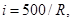
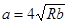
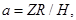
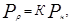
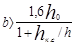
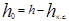
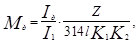
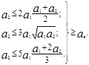
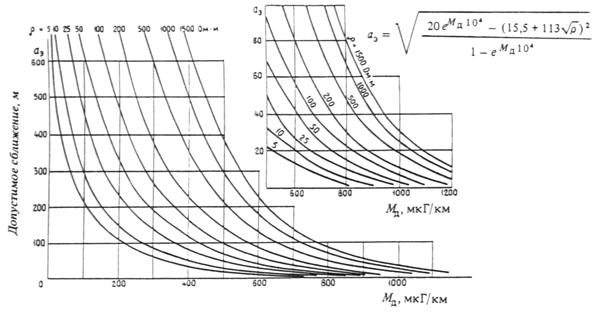

СТРОИТЕЛЬНЫЕ НОРМЫ И ПРАВИЛА
ТРАМВАЙНЫЕ
И ТРОЛЛЕЙБУСНЫЕ
ЛИНИИ
СНиП 2.05.09-90
ГОСУДАРСТВЕННЫЙ СТРОИТЕЛЬНЫЙ КОМИТЕТ СССР
МОСКВА 1990
РАЗРАБОТАНЫ Гипрокоммундортрансом Минжилкомхоза РСФСР (В. И. Чубуков - руководитель темы, И. Я. Клячин, Л. И. Волкова, Г. С. Шейнюк, А. С. Кипсар, Г. А. Терехов, З. И. Лукашова); АКХ им. К. Д. Памфилова Минжилкомхоза РСФСР (канд. техн. наук Б. З. Кантор); МосгортрансНИИпроектом Мосгорисполкома (В. Я. Гершанов, канд. техн. наук В. М. Комаров, Б. С. Финкельштейн); Ленгипроинжпроектом Ленгорисполкома (канд. техн. наук Б. В. Осинский); Киевпроектом Киевского горисполкома (В. А. Резников, М. П. Савченко); ЛНИИ АКХ им. К. Д. Памфилова Минжилкомхоза РСФСР (канд. техн. наук В. В. Хиценко); НИКТИ ГХ Минжилкомхоза УССР (канд. техн. наук Ю. С. Садовой).
ВНЕСЕНЫ Минжилкомхозом РСФСР.
ПОДГОТОВЛЕНЫ К УТВЕРЖДЕНИЮ Госкомархитектуры (Г. А. Долгих, Т. И. Суханова, Л. Г. Сурков).
С введением в действие СНиП 2.05.09-90 „Трамвайные и троллейбусные линии“ с 1 января 1991 г. утрачивает силу СНиП II-41-76 “Электрифицированный городской транспорт. Трамвайные и троллейбусные линии".
При пользовании нормативным документом следует учитывать утвержденные изменения строительных норм и правил и государственных стандартов, публикуемые в журнале “Бюллетень строительной техники“, “Сборнике изменений к строительным нормам и правилам“ Госстроя СССР и информационном указателе “Государственные стандарты СССР“ Госстандарта СССР.
|
Государственный
строительный |
Строительные нормы и правила |
СНиП 2.05.09-90 |
|
Трамвайные и троллейбусные линии |
Взамен |
Настоящие нормы и правила распространяются на проектирование вновь строящихся и реконструируемых транспортных сооружений, располагаемых в населенных пунктах:
трамвайных линий (с шириной рельсовой колеи на прямых участках 1524 мм) обычных, скоростных, грузовых и служебных, а также располагаемых на территории депо и ремонтных мастерских (заводов);
троллейбусных линий;
зданий и сооружений для хранения, ремонта и обслуживания подвижного состава электрического транспорта.
Область применения нормативных требований и положений, а также ограничение их применения для каждого из сооружений транспорта приведены в соответствующих разделах настоящих норм и правил.
Пояснения основных терминов, применяемых в настоящих нормах и правилах, приведены в справочном приложении 1.
1.1. Нормы настоящего раздела должны соблюдаться при проектировании новых и реконструкции существующих:
трамвайных линий с шириной рельсовой колеи на прямых участках 1524 мм с расчетными скоростями сообщения менее 24 км/ч (обычный трамвай) и 24 км/ч и более (скоростной трамвай); грузовых и служебных трамвайных линий, а также трамвайных линий, расположенных на территории депо, ремонтных мастерских и заводов, разворотных колец;
троллейбусных линий;
контактных сетей трамвайных и троллейбусных линий.
Примечания: 1. Допускается проектировать линии скоростного трамвая с шириной рельсовой колеи на прямых участках 1521 мм при соблюдении условий, изложенных в примеч. 1 к табл. 10.
2. При проектировании путей обычного трамвая, которые в перспективе (в ближайшие 10-15 лет) могут быть использованы для скоростного трамвая, труднопереустраиваемые элементы пути (земляное полотно, кривые участки, продольный профиль, габариты приближения строений и др.) следует предусматривать по нормам проектирования скоростного трамвая.
3. За расчетную скорость сообщения принимается скорость движения трамваев или троллейбусов между конечными пунктами посадки (высадки) пассажиров, включая время стоянок на промежуточных остановках.
1.2. Трамвайные и троллейбусные линии следует проектировать в соответствии с комплексной схемой развития всех видов городского пассажирского транспорта и в увязке с проектом планировки и застройки города.
1.3. Проектирование новых и реконструкцию существующих трамвайных и троллейбусных линий, их отдельных сооружений и устройств следует осуществлять с учетом требований СНиП 1.02.01-85.
1.4. Линии скоростного трамвая следует проектировать в городах и между городом и тяготеющими к нему населенными пунктами на направлениях с устойчивым пассажиропотоком не менее 7 тыс. пассажиров в час „пик" в одном направлении или при других потоках при соответствующем обосновании. Линии трамвая, работающего в обычном режиме, следует проектировать на направления с устойчивым пассажиропотоком не менее 5 тыс. пассажиров в час „пик" в одном направлении.
Движение по линиям скоростного трамвая, как правило, должно быть организовано автономно от трамвая, работающего в обычном режиме, с обеспечением удобных пересадочных узлов. Допускается проектирование линии обычного трамвая с организацией скоростного движения на вылетных направлениях или при подземном прохождении трассы в зоне центра города. Для скоростного и обычного трамвая следует предусматривать единую систему хранения, технического обслуживания, энергоснабжения и управления.
1.5. Пропускную и провозную способность трамвайных и троллейбусных линий следует определять на десятый год эксплуатации по участку, наиболее загруженному в час „пик". При этом наполнение подвижного состава следует принимать из расчете, что все места для сидения заняты, а на 1 м2 свободной площади пола пассажирского салона размещаются 4,5 стоящих пассажира.
Наименьший допустимый интервал во времени между поездами (одиночными вагонами) трамвая надлежит определять расчетом. На стадии разработки комплексных транспортных схем этот интервал можно принимать равным 50 с.
1.6. Расчетные размеры подвижного состава трамваев, учитываемые при проектировании путей, надлежит принимать в соответствии со справочным приложением 2.
|
Внесены |
Утверждены |
Срок |
1.7. Пассажирские трамвайные линии следует проектировать двухпутными. Однопутные участки допускается предусматривать в местах, где исключается одновременное встречное движение поездов (вагонов).
Сплетение трамвайных путей и однопутные участки протяженностью не более 500 м на двухпутных линиях могут допускаться временно на период производства строительных или ремонтных работ.
1.8. В зависимости от местных условий трамвайные пути следует предусматривать:
на обособленном полотне, отделенном от проезжей части или тротуаров разделительной полосой; при этом головки рельсов должны располагаться выше уровня бортового камня, ограждающего проезжую часть;
на самостоятельном полотне (преимущественно на загородных участках трамвайной линии);
на совмещенном полотне (при этом головки рельсов должны быть не ниже уровня проезжей части улиц и площадей, по оси проезжей части или по одной из ее сторон), а также на реконструируемых трамвайных линиях при невозможности переустройства на обособленное полотно.
Размещение трамвайных путей в пределах проезжей части автомобильных дорог общей сети не допускается. На автомагистралях, имеющих раздельные полосы движения, размещение трамвайных путей возможно в разделительной полосе, если ее ширина отвечает требованиям п. 2.35 настоящих норм.
1.9. Скоростные линии трамвая следует проектировать, как правило, наземными на обособленном полотне, расположенном вдоль магистральных улиц, или на самостоятельном полотне - вне пределов населенных пунктов.
Обособленное трамвайное полотно следует отделять от проезжих частей улиц, тротуаров и велосипедных дорожек разделительными полосами (газонами) с устройством ограждений, запрещающих доступ пешеходов и внерельсового транспорта, кроме специального по обслуживанию и ремонту. Разделительные полосы на подходах к мостам, путепроводам и эстакадам допускается не предусматривать.
Для отдельных участков пути (в центральных районах города с интенсивным движением, при наличии узких улиц с капитальной застройкой, в транспортных узлах, а также в трудных топографических условиях) при соответствующем технико-экономическом обосновании допускается проектировать тоннели или эстакады.
На перегонах скоростных линий трамвая, прокладываемых на застроенной территории, надлежит предусматривать надземные или подземные пешеходные переходы, расстояние между которыми устанавливается в зависимости от градостроительной ситуации, а также переезды в необходимых случаях при соответствующем обосновании.
1.10. Устройство трамвайных путей должно предусматривать мероприятия по ограничению шума, вибрации и утечки тока по ГОСТ 9.602-89.
1.11. В проекте отдельным комплексом следует выделить работы, выполняемые посла обкатки трамвайного пути в течение 5-6 мес: послеосадочный ремонт, устройство бесстыкового пути и дорожного покрытия.
1.12. Нормы проектирования, указанные в настоящих нормах для стесненных условий, допускается применять при наличии узких улиц с капитальной застройкой, а также в тех случаях, когда применение основных норм связано со сносом или капитальным переустройством существующих зданий и сооружений, значительным увеличением объемов и стоимости строительно-монтажных работ; применение этих норм должно быть обосновано в проекте.
2.1. Расстояние между осями смежных трамвайных путей на прямых участках должно обеспечивать необходимые зазоры безопасности:
между трамвайным вагоном и опорой контактной сети, расположенной в междупутье, - не менее 300 мм;
между трамвайными вагонами (при отсутствии опор контактной сети в междупутье) или трамвайным вагоном и экипажем другого вида транспорта как на прямых, так и на кривых участках пути - не менее 600 мм.
В начале и конце кривых и в трамвайных узлах величину зазора безопасности допускается уменьшать до 300 мм на протяжении не свыше 20 м.
2.2. Расстояние между осями смежных трамвайных путей (на прямой) должно составлять, мм:
при боковом размещении опор контактной сети ................................ 3200
при установке опор контактной сети в междупутье ............................ 3700
Если опоры контактной сети имеют ширину 350 мм и менее, допускается уменьшить ширину междупутья до 3550 мм.
В Москве и Ленинграде, в виде исключения, допускается принимать ширину междупутья 3148, 3424 и 3758 мм.
При строительстве трамвайных путей с применением путеукладочных механизмов железнодорожного типа ширину междупутья можно увеличивать до 4100 мм.
Расстояние между осями смежных трамвайных путей скоростного трамвая, располагаемых на путепроводах, мостах, эстакадах и в тоннелях, следует принимать по ГОСТ 23961-80.
2.3. Расстояние между осями смежных путей открытой стоянки вагонов на территории депо на прямых участках должно быть не менее 3800 мм. В районах с высотой снежного покрова более 30 см указанное расстояние через каждые 2-3 пути надлежит увеличивать до 6250 мм.
Расстояние между осями смежных путей, разделенных пожарным проездом, должно быть не менее 8000 мм.
2.4. Расстояние между осями смежных трамвайных путей на кривых участках пути необходимо увеличивать на сумму величин свеса середины вагона с внутренней стороны кривой и выноса угла вагона с наружной стороны кривой (справочное приложение 3).
Расстояния между осями смежных путей на кривых участках трамвайной линии для четырехосного подвижного состава обычного трамвая следует принимать по табл. 1.
Таблица 1
|
Расстояние, мм, между осями смежных путей на кривых участках трамвайной линии при исходных расстояниях между осями на прямых участках, мм |
||
|
3200 |
3700 |
|
|
20 |
4100 |
4100 |
|
25 |
3860 |
3860 |
|
30 |
3610 |
3710 |
|
40 |
3580 |
3700 |
|
50 |
3500 |
3700 |
|
60 |
3450 |
3700 |
|
75 |
3400 |
3700 |
|
100 |
3350 |
3700 |
|
150 |
3300 |
3700 |
|
300 |
3250 |
3700 |
|
1000 |
3200 |
3700 |
Для шести- и восьмиосных вагонов расстояние между осями смежных путей на кривых участках надлежит определять в проекте в зависимости от конструктивных особенностей подвижного состава расчетного типа.
Расстояние между осями смежных путей на кривых участках линий скоростного трамвая (при исходном расстоянии между осями на прямых участках, равном 3200 мм) следует принимать, мм:
при радиусах кривых от 100 до 300 м ………3500
„ „ „ св. 300 до 500 м ……… 3400
„ „ „ „ 500 до 800 м ………3300
„ „ „ „ 800 м ……………….3200
Переход от нормальных междупутных расстояний на прямых участках пути к увеличенным на кривых участках следует принимать в пределах переходных кривых за счет применения на внутреннем пути переходных кривых увеличенной длины по сравнению с длиной, принятой для наружного пути.
При отсутствии переходных кривых увеличение междупутных расстояний достигается путем применения на внутреннем пути круговых кривых большего радиуса, чем радиус основной кривой.
2.5. Минимальное расстояние от оси пути на прямых участках до зданий, сооружений и устройств надлежит принимать, м:
жилых и общественных зданий.................................................................................. 20,0
нежилых зданий и уличных ограждений.................................................................. 2,8
стен тоннелей, подпорных стенок, опор мостов и путепроводов, перил мостов, ограждений мест производства работ (при запрещении к ним доступа пешеходов) 2,3
тротуаров, проезжей части (внешняя грань бортового камня или бровка мощеного подзора) при отсутствии разделительной полосы или посадочной площадки 1,9
опор контактной сети, расположенных:
вне междупутья........................................................................................................ 2,3
в междупутье ........................................................................................................... 1,6
опор освещения и контактной сети на территории депо и мастерских (заводов), расположенных вне междупутья 1,9
одиночных стволов деревьев с диаметром кроны до 5 м:
в нормальных условиях.......................................................................................... 5,0
в стесненных „......................................................................................................... 3,0
кустарников, высотой, м:
до 1............................................................................................................................ 1,5
св. 1............................................................................................................................ 3,0
стоек проемов въездных ворот на территорию и в здание депо............................. 1,9
края посадочной площадки......................................................................................... 1,4
шумозащитного экрана (при запрещении доступа пешеходов) высотой, м:
до 0,7......................................................................................................................... 1,5
св. 0,7......................................................................................................................... 2,3
ограждений трамвайной линии (при запрещении доступа пешеходов), одиночных столбов 2,3
навесов посадочных площадок, дорожных знаков, светофоров (на высоте более 2,5 м) 1,9
парапетов выходов из подземных пешеходных переходов или лестничных маршей надземных пешеходных переходов 2,3
станционных сооружений трамвая:
на перегонах............................................................................................................. 2,3
на конечных станциях............................................................................................. 4,4
напольных сооружений скоростных линий трамвая высотой не более 0,7 м ...... 1,5
Примечания: 1. На кривых участках пути минимальные расстояния от оси пути до зданий, сооружений и устройств надлежит увеличивать на величину выноса или свеса вагона.
2. Для реконструируемых линий расстояние от оси пути до жилых и общественных зданий допускается уменьшать по согласованию с местными Советами.
2.6. Подземные коммуникации следует располагать за пределами самостоятельного земляного полотна трамвайного пути на расстоянии не менее 2 м от бровки откоса выемки или подошвы насыпи.
Для путей, расположенных в одном уровне с проезжей частью или на обособленном полотне, горизонтальные расстояния от оси пути до подземных коммуникаций необходимо принимать не менее, м:
до водопровода, напорной и самотечной канализации (бытовой и дождевой), дренажей общей сети, кроме путевых, тепловых сетей (до наружной стенки канала), газопроводов с давлением до 0,294 МПа (3 кгс/см2), силовых кабелей и кабелей связи, общих коллекторов 2,8
до газопроводов высокого давления, св. 0,294 до 3,53 МПа (св.3 до 12 кгс/см2).. 3,8
Допускается уменьшать расстояния от оси пути до силовых кабелей до 2 м при условии прокладки их в изолирующих блоках или трубах.
Верх трубы или защитного кожуха подземного трубопровода, пересекаемого трамвайными путями, должен быть расположен на глубине не менее 1,2 м от головки рельса.
Пересечения подземных инженерных сетей с трамвайными путями следует выполнять под углом 90°. В стесненных условиях при соответствующем обосновании допускается уменьшать угол пересечения до 75°.
2.7. Инженерные сети под трамвайными путями должны находиться в защитных изолирующих футлярах, трубах, кожухах, блоках на глубине не менее 1,2 м от головки рельса до верха конструкции при открытом способе производства работ, продавливании и горизонтальном бурении и не менее 3 м от головки рельса - при щитовой проходке. Концы защитных устройств на инженерных сетях должны быть выведены на расстояние не менее 2 м от крайних рельсов.
Пересечение трамвайных путей подземными инженерными сетями должно выполняться на расстоянии не менее 4 м от стрелок, крестовин и мест присоединения отсасывающих кабелей.
Пересечения трамвайных путей с линиями электропередач и связи, газопроводами, водопроводами и другими наземными и подземными устройствами и сооружениями следует проектировать, соблюдая требования соответствующих нормативных документов по проектированию этих устройств и сооружений.
При реконструкции трамвайных путей, в виде исключения, при соответствующем обосновании в проекте, допускается сохранение существующих безнапорных инженерных сетей в полосе трамвайных путей. При этом необходимо предусматривать меры, исключающие нарушение движения трамвайных поездов в случае аварий или ремонта инженерных сетей (вынос горловины колодца и т. п.).
2.8. Расстояния от уровня головок рельсов до низа пролетных строений мостов, путепроводов и эстакад должны быть не менее 5,0 м. Для существующих сооружений это расстояние допускается уменьшать до 4,6 м.
2.9. Кривые участки пути в плане следует проектировать возможно больших радиусов, при этом максимальная величине радиуса не должна превышать 2000 м.
Наименьшую величину радиусов кривых в плане следует принимать по табл. 2.
Для скоростных трамвайных линий, расположенных на мостах, путепроводах и в тоннелях, наименьшую величину радиусов кривых следует принимать по СНиП II-40-80 „Метрополитены".
При размещении трамвайных путей в пределах земляного полотна автомобильной дороги допускается применять радиусы кривых более 2000 м - в соответствии с радиусами кривых, принятыми для автомобильной дороги.
Увеличение радиуса свыше 2000 м допускается также при малых углах поворота для обеспечения минимально допустимой длины кривой. Длина круговой кривой, за исключением кривых в узлах, должна быть не менее 10 м.
Таблица 2
|
Наименьшие радиусы кривых в плане, м |
||
|
в нормальных условиях |
допускаемые в стесненных условиях |
|
|
На перегонах трамвая: |
||
|
скоростного |
400 |
200 |
|
обычного |
50 |
25 |
|
На разворотных кольцах, в узлах, на грузовых и служебных путях, а также на путях, расположенных на территории депо и ремонтных мастерских (заводов) |
25 |
20 |
Шаг изменения величины радиусов кривых в плане следует принимать, м:
от 20 до 35 м ………через 1
„ 35 „ 100 м ………. „ 5
„ 100 „ 200 м ………„ 10
„ 200 „ 1000 м ……. „ 50
св. 1000 м …………. „ 100
Примечание. Для узлов и стрелочных переводов допускается отступление от приведенных значений кратности радиусов.
2.10. Кривые участки пути радиусом 1000 м и менее для скоростных линий, 100 м и менее для обычных линий трамвая должны сопрягаться с прямыми участками посредством переходных кривых, наименьшие длины которых определяются в зависимости от скорости движения трамвайных поездов (вагонов). Их следует принимать: для скоростного трамвая - по табл. 3, для обычного трамвая - по табл. 4.
2.11. Прямые вставки между начальными точками переходных кривых, а при их отсутствии - круговых кривых, направленных в разные стороны, следует предусматривать длиной не менее 15 м на скоростных линиях и 10 м - на обычных линиях трамвая; для стесненных условий на обычных линиях длину прямых вставок допускается принимать равной 6 м.
При укладке одноостряковых стрелок при кривых, направленных в одну сторону, рекомендуется предусматривать прямую вставку длиной не менее 4 м.
2.12. Величина продольного уклона путей трамвая на прямых участках не должна превышать, ‰:
скоростных линий:
на перегонах .............................................................................................................. 50
на подходах к мостам, путепроводам и эстакадам, на рамповых участках тоннелей 60
в тоннелях................................................................................................................... 40
обычных линий .............................................................................................................. 60
на отстойных путях конечных пунктов, депо, ремонтных мастерских и заводов.. 2,5
в стесненных условиях при устройстве улавливающего тупика.............................. 30
на подъездных и выездных путях депо, ремонтных мастерских (заводов)............. 30
Таблица 3
|
Наименьшие длины переходных кривых, м, для скоростных линий трамвая при скорости движения трамвайных поездов (вагонов), км/ч |
||||||||
|
80-76 |
75-71 |
70-66 |
65-61 |
60-56 |
55-51 |
50-46 |
45-41 |
|
|
1000 |
40 |
30 |
30 |
25 |
20 |
- |
- |
- |
|
800 |
50 |
40 |
35 |
30 |
25 |
20 |
- |
- |
|
600 |
- |
50 |
45 |
40 |
30 |
25 |
- |
- |
|
500 |
- |
60 |
55 |
45 |
35 |
30 |
- |
- |
|
400 |
- |
- |
- |
50 |
45 |
35 |
30 |
- |
|
350 |
- |
- |
- |
50 |
50 |
40 |
30 |
- |
|
300 |
- |
- |
- |
- |
50 |
45 |
35 |
- |
|
250 |
- |
- |
- |
- |
- |
- |
40 |
35 |
|
200 |
- |
- |
- |
- |
- |
- |
50 |
40 |
Таблица 4
|
Наименьшие длины переходных кривых, м, для обычных линий трамвая |
||||
|
на совмещенном полотне при скорости движения трамвайных поездов (вагонов), км/ч |
на обособленном и самостоятельном полотне при скорости движения трамвайных поездов (вагонов), км/ч |
|||
|
24-21 |
20-15 |
24-21 |
20-15 |
|
|
100 |
9 |
- |
18 |
- |
|
75 |
9 |
8 |
18 |
14 |
|
50 |
9 |
8 |
18 |
14 |
|
30 |
- |
8 |
- |
14 |
|
20 |
- |
7 |
- |
- |
|
Примечания: 1. Для стесненных условий допускается принимать меньшие значения длин переходных кривых в пределах, указанных в табл. 3 и 4, с соответствующим ограничением скорости движения. 2. На разворотных кольцах, в узлах, на путях, расположенных на территории депо и ремонтных мастерских (заводов), переходные кривые допускается не предусматривать. |
||||
Протяженность участков трамвайных путей не должна, как правило, превышать, м:
с уклонами
30‰ - 700 50‰ - 350
40‰ - 500 60‰ - 250
При уклонах свыше 30 ‰ на участках, превышающих указанные длины, необходимо предусматривать установку ревизорского поста и другие специальные мероприятия по обеспечению безопасности движения, определяемые в проекте.
Применение продольных уклонов крутизной более 40 ‰ для кривых участков пути радиусом менее 100 м не допускается.
В стесненных условиях при реконструкции трамвайных линий допускается, в виде исключения, принимать продольные уклоны крутизной до 90 ‰ для прямых участков перегонов: при этом в проекте следует предусматривать меры по обеспечению безопасности движения.
2.13. Для кривых участков пути предельно допустимый продольный уклон, принятый для прямых участков, следует уменьшать на величину, эквивалентную дополнительному сопротивлению от кривой i, ‰, определяемую по формуле

где R - радиус кривой, м.
2.14. Продольный профиль следует проектировать элементами возможно большей длины, но не менее 50 м для скоростных и 35 м - для обычных линий трамвая.
В узлах допускается продольный профиль проектировать элементами меньшей длины.
Алгебраическая разность значений продольных уклонов двух смежных элементов пути не должна превышать 60 ‰.
2.15. Смежные прямолинейные элементы продольного профиля трамвайных путей, располагаемых на самостоятельном полотне, с алгебраической разностью значений сопрягаемых уклонов более 7 ‰ для обычных линий и более 5 ‰ для скоростных линий следует сопрягать вертикальными кривыми радиусом не менее, м:
для скоростных линий:
на перегонах .............................................. 3000
вблизи остановочных пунктов................. 2000
для обычных линий .................................. 500
В стесненных условиях допускается уменьшать радиусы вертикальных кривых линий скоростного трамвая до 1500 м на перегонах и до 500 м - вблизи остановочных пунктов.
Смежные прямолинейные элементы продольного профиля трамвайных путей, располагаемых в одном уровне с проезжей частью улиц или на обособленном полотне, следует сопрягать вертикальными кривыми, радиусы которых надлежит принимать в соответствии со СНиП 2.07.01-89 а зависимости от алгебраической разности значений сопрягаемых уклонов.
Между вертикальными кривыми, направленными в разные стороны, следует предусматривать прямые вставки длиной не менее 10 м.
Между вертикальными кривыми, направленными в одну сторону, прямые вставки допускается не предусматривать.
2.16. Вертикальные кривые следует проектировать, как правило, вне переходных кривых, а также вне пролетных строений мостов, путепроводов и эстакад с безбалластной проезжей частью, при этом точки переломов продольного профиля должны располагаться от концов пролетных строений мостов, путепроводов и эстакад с безбалластной проезжей частью не менее чем на величину тангенса вертикальной кривой.
2.17. Расстояние от ворот территории или здания депо до начала криволинейного участка пути в плане должно быть не менее расчетной длины вагона.
2.18. Точки переломов продольного профиля пути следует располагать, как правило, за пределами переходных кривых. В статейных условиях и для смягчения уклонов пути переломы продольного профиля допускается располагать вне зависимости от плана линии.
В пределах стрелочных переводов и глухих пересечений переломы продольного профиля не допускаются.
2.19. Места пересечений трамвайных путей с неэлектрифицированными железными дорогами в одном уровне следует располагать на площадках с продольным уклоном не более 2,5 ‰ и длиной не менее 15 м между смежными вертикальными кривыми; при этом величина продольного уклона трамвайного пути на подходах к пересечению должна быть не более 30 ‰ на протяжении 50 м.
2.20. Стрелочные переводы и глухие пересечения следует располагать за пределами вертикальных кривых на участках с уклонами не более, ‰:
стрелочные переводы ....... 30
глухие пересечения .......... 10
В стесненных условиях стрелочные переводы и глухие пересечения допускается располагать в пределах вертикальной кривой радиусом не менее 2000 м.
2.21. Расположение рельсов на прямых участках следует предусматривать:
для путей, не имеющих дорожного покрытия, а также в пределах стрелочных переводов и глухих пересечений, на мостах, путепроводах, эстакадах и в тоннелях - в одном уровне;
для путей, имеющих дорожное покрытие - с поперечным уклоном в сторону водоотводящих устройств 7 ‰.
При размещении кривых участков пути на пересечении улиц (дорог) головки наружного рельса внутренней кривой и внутреннего рельса наружной кривой допускается проектировать в одном уровне или с возвышением, соответствующим общему уклону поперечного профиля пересекаемой улицы (дороги).
2.22. Величину возвышения головки наружного рельса над головкой внутреннего для кривых участков пути следует принимать по табл. 5, 6.
Возвышение головки наружного рельса на кривых участках пути, расположенных на проезжей чести улиц, на переездах и на площадках с дорожной одеждой капитальных типов, допускается уменьшать на 50 %.
Таблица 5
|
Наибольшая допускаемая скорость, км/ч |
Возвышение головки наружного рельса, мм, на скоростных линиях трамвая при расчетной скорости, км/ч |
|||||
|
80 |
70 |
60 |
50 |
40 |
||
|
200 |
40 |
н |
н |
н |
н |
55 |
|
300 |
50 |
н |
н |
н |
100 |
65 |
|
400 |
60 |
н |
н |
100 |
80 |
50 |
|
600 |
70 |
н |
100 |
75 |
50 |
35 |
|
800 |
80 |
100 |
75 |
55 |
40 |
25 |
|
1000 |
80 |
90 |
60 |
45 |
30 |
20 |
|
1500 |
80 |
65 |
45 |
35 |
20 |
15 |
|
2000 |
80 |
40 |
30 |
25 |
15 |
10 |
|
_____________ “н" - не разрешается движение с данной скоростью. |
||||||
|
Радиус кривой, м |
Возвышение головки наружного рельса, мм, на обычных линиях трамвая |
|
До 100 включ. |
70 |
|
Св. 100 до 200 включ. |
50 |
|
“ 200 “ 500 “ |
40 |
|
“ 500 “ 1000 “ |
30 |
Для трудных условий движения поездов (вагонов)* величину возвышения головки наружного рельса надлежит принимать по табл. 7.
Таблица 7
|
Возвышение наружного рельса, мм в трудных условиях движения поездов (вагонов) при расположении путей |
||
|
в одном уровне с проезжей частью |
обособленном или самостоятельном полотне |
|
|
До 50 включ. |
100 |
150 |
|
Св. 50 до 100 включ. |
80 |
120 |
|
“ 100 “ 250 “ |
60 |
90 |
|
“ 250 “ 500 “ |
40 |
40 |
|
“ 500 “ 1000 “ |
30 |
30 |
_____________
* К трудным условиям движения поездов (вагонов) относятся:
спуски и подъемы с уклоном более 50 ‰ (любой протяженности);
затяжные (длиной более 200 м) спуски и подъемы с уклонами более 35 ‰;
кривые участки пути радиусом менее 78 м, располагаемые непосредственно за спуском с уклоном более 35 ‰.
Отвод возвышения наружного рельса надлежит предусматривать на протяжении переходной кривой, а при ее отсутствии - на прямом участке, примыкающем к круговой кривой. Уклон отвода возвышения наружного рельса должен быть не более 5 ‰.
2.23. Пересечения скоростных линий трамвая с городскими дорогами и улицами, наземными линиями метрополитена, пешеходными потоками, а также с другими трамвайными линиями необходимо предусматривать в разных уровнях.
Для первой очереди строительства при малых размерах движения допускается проектировать пересечения, кроме линий метрополитена, в одном уровне, при этом места пересечений следует предусматривать в зоне остановочных пунктов с обеспечением необходимой видимости и возможности быстрой остановки трамвайных поездов (вагонов) перед пересечениями.
Пересечения обычных линий трамвая с автомобильными дорогами I, II и III категорий, а также с городскими магистральными дорогами и улицами скоростного или непрерывного движения следует проектировать в разных уровнях.
Пересечения путей обычного трамвая с дорогами и улицами других категорий допускается проектировать в одном уровне. При этом угол пересечения должен быть не менее 60°. В стесненных условиях допускается уменьшать этот угол по согласованию с органами Госавтоинспекции МВД СССР.
2.24. Пересечение трамвайных путей с железными дорогами общей сети, внешними подъездными путями и электрифицированными внутренними подъездными путями надлежит предусматривать в разных уровнях.
Пересечения трамвайных путей с неэлектрифицированными внутренними подъездными путями промышленных предприятий допускается предусматривать в одном уровне. При этом проект должен содержать меры по обеспечению безопасности движения, предусматривать соответствующую сигнализацию и оградительные устройства. В месте пересечения должна быть обеспечена взаимная видимость. Угол пересечения должен быть не менее 45°.
2.25. Глухие пересечения трамвайных путей следует располагать на прямых участках под углом не менее 45°. Криволинейные пересечения допускается предусматривать, в виде исключения, при соответствующем обосновании в проекте.
2.26. Места разветвлений скоростных линий трамвая, примыкания к ним служебных и других трамвайных путей следует размещать на расстоянии не менее 40 м от ближайшего края платформы остановочного пункта.
Стрелочные переводы на обычных линиях трамвая допускается укладывать на перегонах вне полосы движения нерельсового транспорта.
Между стыками рамных рельсов двух стрелочных переводов, направленных в разные стороны, следует предусматривать прямую вставку длиной не менее, м:
на путях скоростных линий ........................15
„ обычных „ ........................10
то же в стесненных условиях ...................... 6
2.27. Число и местоположение остановочных пунктов и пересадочных узлов для новых и реконструируемых трамвайных линий надлежит определять на основании комплексной схемы развития городского пассажирского транспорта.
Расстояние между остановочными пунктами следует принимать, м:
для обычных линий …………………………………………….от 400 до 600
для скоростных линий:
в пределах застроенной территории ………………………….от 800 до 1200
вне пределов застроенной территории ……………………….1500 и более
Остановочные пункты на мостах, путепроводах и эстакадах, в виде исключения, допускается располагать по согласованию с органами Госавтоинспекции МВД СССР.
2.28. Остановочные пункты и разъезды следует располагать, как правило, на прямых участках пути с продольным уклоном не более 30 ‰.
В стесненных условиях допускается размещать остановочные пункты на внутренних участках кривых радиусом не менее 100 м, а также на путях с продольным уклоном до 40 ‰.
2.29. На остановочных пунктах необходимо, как правило, предусматривать павильоны или на весы для пассажиров. В климатических подрайонах IА, IБ и IГ павильоны должны быть утепленными.
2.30. Посадочные площадки следует размешать в одном уровне с проезжей частью или выше (не более 30 см) верха головок рельсов.
При расположении путей на обособленном или самостоятельном полотне посадочные площадки должны иметь твердое покрытие. При расположении путей в одном уровне с проезжей частью улицы места посадки и высадки пассажиров должны быть ограждены маркировочными линиями.
Длину посадочной площадки следует принимать на 5 м больше расчетной длины поезда (вагона). Ширина посадочной площадки определяется в зависимости от расчетного числа пассажиров, но не менее 1,5 м.
Ширина посадочной площадки в тоннелях, а также при наличии лестничных входов в пешеходные переходы должна быть не менее 3 м.
Поперечный уклон посадочных площадок следует принимать равным 10-15 ‰ и направленным в сторону от пути.
2.31. Конечные пункты (станции) маршрутов трамвая разделяются на:
распорядительные - имеющие разветвления путей, служебные и санитарно-бытовые помещения;
технические - имеющие разветвления путей, посадочные площадки для пассажиров и устройства для контроля за регулярностью движения.
В периферийных районах и пригородных зонах крупнейших городов на конечных станциях по согласованию с местными Советами допускается предусматривать площадки для конечных пунктов автобусов, стоянки легковых автомобилей, мотоциклов и велосипедов.
Посадку и высадку пассажиров на конечных пунктах (станциях) рекомендуется предусматривать раздельной - на самостоятельных площадках.
На конечных распорядительных пунктах трамвая кроме приемо-отправочных и обгонных путей должны быть пути для мелкого ремонта, уборки и отстоя вагонов в резерве и на время обеденного перерыва поездной бригады и спецвагонов.
Конечные распорядительные станции должны иметь служебные и санитарно-бытовые помещения для дежурных и поездных бригад, линейных рабочих, начальников маршрутов, комнаты путевых рабочих и помещения для хранения инструмента и материалов, а также помещения для организации горячего питания поездных бригад и линейного персонала. На линиях скоростного трамвая следует предусматривать также помещения для устройств сигнализации, централизации и блокировки (СЦБ), автоматики и связи.
В стесненных условиях на конечных пунктах (станциях) обычных линий трамвая раздельные площадки для посадки и высадки пассажиров, а также пути для обгона и мелкого ремонта трамвайных поездов (вагонов) допускается на предусматривать.
2.32. Расстояние между разъездами на однопутных линиях следует определять расчетом. Как правило, разъезды должны совмещаться с остановочными пунктами.
Полезную длину путей разъездов следует определять в зависимости от числа и типа трамвайных поездов (вагонов), одновременно принимаемых на разъездной путь, с учетом расстояния между поездами (вагонами), равного 2 м, и возможной стоянки путевых машин и спецвагонов.
На трамвайных линиях протяженностью более 10 км через каждые 6-8 км необходимо предусматривать кольца (петли) для разворота поездов (вагонов).
2.33. На вылетных линиях трамвая, проходящих вне территории города, следует предусматривать переезды для сельскохозяйственной техники и прогона скота, переходы на пересечениях с постоянными пешеходными путями, а также ограждения в местах выпаса скота.
2.34. Земляное полотно трамвайных путей надлежит проектировать:
в виде котлована - для путей с заглубленным балластным слоем, расположенных на улицах и площадях в одном уровне с проезжай частью или на обособленном полотне;
в виде насыпей или выемок - для путей, расположенных на самостоятельном полотне с открытым балластным слоем.
На кривых участках двухпутных линий ширину котлована следует увеличивать на величину уширения междупутья.
2.38. Ширину двухпутных трамвайных линий на прямых участках перегонов следует принимать, м:
путей обычного трамвая, расположенных:
в одном уровне с проезжей частью улицы при отсутствии опор контактной сети в междупутье 7,0
на обособленном полотне............................................................................................ 8,8
то же с учетом размещения посадочных площадок.................................................. 10,0
путей скоростного трамвая......................................................................................... 10,0
однопутных линий трамвая ....................................................................................... 3,8
2.37. Самостоятельное земляное полотно трамвайных путей в виде насыпей и выемок следует проектировать в соответствии с требованиями СНиП по проектированию железных дорог колеи 1520 мм, а также с учетом требований настоящих норм.
Ширину самостоятельного земляного полотна на прямых участках трамвайного пути следует принимать не менее указанной в табл. 8.
Таблица 8
|
Ширина самостоятельного земляного полотна на прямых участках пути, м, при использовании грунтов |
||
|
глинистых и недренирующих мелких и пылеватых песков |
скальных крупнообломочных и дренирующих песчаных |
|
|
Однопутное |
5,5 |
5,0 |
|
Двухпутное при расстоянии между осями путей, мм: |
||
|
3200 |
8,8 |
8,2 |
|
3700 |
9,3 |
8,7 |
|
4100 |
9,7 |
9,1 |
|
Примечание. Ширину однопутного земляного полотна на кривых участках следует увеличивать с наружной стороны кривой: при радиусе 650 - 2000 м - на 0,1 м; „ „ 110 - 600 м - „ 0,2 м; „ „ 100 м и менее - „ 0,3 м. Ширину двухпутных участков следует увеличивать на величину уширения междупутья. |
||
Поперечное очертание верха земляного полотна при использовании недренирующих грунтов надлежит проектировать в виде треугольника с основанием, равным ширине полотна, и скатами с уклонами 30 - 40 ‰, направленными в сторону водоотводных устройств. При использовании дренирующих грунтов верх земляного полотна следует проектировать горизонтальным.
2.38. Отвод воды из основания путей, расположенных на обособленном полотне или в одном уровне с проезжей частью при недренирующих грунтах, следует предусматривать путевыми дренажами мелкого заложения, располагаемыми у края котлована либо по оси междупутья, с продольными уклонами не менее 5 ‰. При продольных уклонах свыше 30 ‰ вместо продольных следует предусматривать поперечные дренажи с расстоянием между дренами не более 50 м.
Поперечный уклон дна котлована в недренирующих грунтах следует принимать равным 20-30 ‰ и направленным в сторону дренажа. В дренирующих грунтах дно корыта следует проектировать горизонтальным.
2.39. Смотровые дренажные колодцы надлежит предусматривать через 40-50 м, а также в местах перелома продольного профиля, перемены направления или изменения диаметра труб.
Выпуск воды из дренажных колодцев в городскую водосточную сеть следует предусматривать не реже чем через 200 м и в низких местах переломов продольного профиля посредством труб диаметром не менее 200 мм. Продольный уклон труб должен быть равен 20-50 ‰ (в стесненных условиях - не менее 10 ‰).
Отвод воды из путевых и стрелочных водоприемных коробок следует предусматривать посредством труб диаметром не менее 150 мм.
При отсутствии водосточной сети допускается выпуск воды в пониженные места рельефа, а также в водопоглощающие колодцы, при проектировании которых следует предусматривать защиту подземных вод от загрязнения.
2.40. Отвод поверхностных вод от путей, расположенных на самостоятельном полотне, следует предусматривать кюветами, водоотводными и нагорными канавами и поперечными лотками.
Ширину бермы между подошвой откоса насыпи и бровкой водоотводной канавы следует принимать не менее 2 м.
При проектировании однопутной (в перспективе двухпутной) трамвайной линии водоотводные устройства необходимо располагать с учетом размещения земляного полотне второго пути.
Размеры поперечного сечения нагорных канав для трамвайных путей, расположенных на спланированных территориях, а также продольных и поперечных водоотводных канав следует определять по расходу воды с вероятностью превышения 10 %; нагорных канав для путей, расположенных на неспланированных территориях - 5 %.
2.41. Дорожные покрытия следует предусматривать на трамвайных путях, расположенных:
на совмещенном полотне;
на обособленном и самостоятельном полотне с песчаным балластом ¾ в пределах жилой застройки, а также на продольных уклонах более 50 ‰ (кроме железобетонных плит и асфальтобетона);
на обособленном и самостоятельном полотне с щебеночным балластом - в пределах остановочных пунктов, а также в случаях, когда покрытие необходимо по санитарно-гигиеническим требованиям;
на территории депо, ремонтных мастерских (заводов).
Примечание. На участках пути с трудными условиями движения поездов (вагонов) применять дорожные покрытия из железобетонных плит и асфальтобетона не допускается.
2.42. К верхнему строению трамвайного пути относятся: рельсы, контррельсы, стыковые и промежуточные скрепления, противоугоны, путевые и междупутные тяги, температурные компенсаторы (уравнительные приборы), подрельсовые основания - шпалы, брусья, рамы, лежни, балласт, а также спецчасти - стрелочные переводы и глухие пересечения; кроме того, на совмещенном и обособленном полотне - дорожное покрытие пути, а на мостах, путепроводах, эстакадах и насыпях - охранные рельсы и брусья.
2.43. Конструкция верхнего строения пути и его отдельных элементов должна соответствовать расчетной нагрузке и расчетной скорости. При назначении конструкции и ее элементов следует учитывать:
назначение трамвайных путей;
интенсивность и скорости движения поездов (вагонов);
типы покрытий проезжей части улицы;
требования благоустройства;
гидрогеологические условия;
план и продольный профиль пути;
наличие местных строительных материалов;
защиту подземных сооружений от коррозии и старения.
2.44. В трамвайных путях следует применять рельсы следующих типов:
трамвайные желобчатые Тв60 и Тв65 (ТУ 14-2-751-87);
железнодорожные Р65 [ГОСТ 8161-75 (СТ СЭВ 1667-79)]; Р50 (ГОСТ 7174-75); Р43 (ГОСТ 7173-54).
В зависимости от назначения путей и устройства полотна следует применять рельсы в соответствии с табл. 9.
2.46. Ширину колеи следует принимать в соответствии с табл. 10.
Переход от нормальной ширины рельсовой колеи к увеличенной надлежит предусматривать на протяжении переходной кривой. При отсутствии переходной кривой уширение колеи производится на прямом участке, примыкающем к круговой кривой.
Отвод уширения колеи не должен превышать 1 мм на 1 м длины пути.
2.48. Трамвайный путь, как правило, должен быть бесстыковым.
Температурно-напряженную систему бесстыкового пути следует применять при железобетонных шпалах и щебеночном основании.
На обычных линиях с дорожным покрытием рельсы надлежит сваривать в плети. Длина рельсовой плети не лимитируется и может быть ограничена только наличием несварного узла, деформационного шва на искусственных сооружениях и т.п.
На участках без дорожного покрытия, если конструкция пути не удовлетворяет требованиям бесстыкового пути, следует укладывать длинные рельсы. Плети разделяются температурными компенсаторами (уравнительными приборами).
Границы рельсовых плетей, укладываемых на мостах, путепроводах и эстакадах, должны назначаться с учетом расположения деформационных швов.
Таблица 9
|
Тип рельсов трамвая |
||||
|
обычные линии трамвая |
скоростные линии трамвая |
депо, парки, ремонтные заводы |
||
|
на совмещенном полотне (с дорожным покрытием) |
на обособленном полотне (без дорожного покрытия) |
|||
|
Прямо и кривой радиусом более 400 м |
Тв60 |
Р50 |
Р65; Р50 |
Новые или старогодные Тв60; Р50; Р43 |
|
Кривой радиусом от 200 до 400 м при продольном уклоне: |
||||
|
менее 20 ‰ |
Тв60 |
Р50 |
Тв60, а также при деревянных шпалах Р65 или Р50 с контррельсами Р50 или Р43 по обеим ниткам |
То же |
|
более 20 ‰ |
Тв65 |
Тв65, а также при деревянных шпалах Р50 с контррельсами Р43 по внутренней нитке |
То же |
" |
|
Кривой радиусом от 75 до 200 м при продольном уклоне: |
||||
|
менее 20 ‰ |
Тв65 |
То же |
- |
" |
|
более 20 ‰ |
Тв65 |
То же, по обеим ниткам |
- |
" |
|
Кривой радиусом менее 75 м |
Тв65 |
То же |
- |
" |
|
На мостах, путепроводах, эстакадах и насыпях высотой более 2 м, в стрелочных переводах и глухих пересечениях |
Тв65 |
“ |
Тв65, а также при деревянных шпалах Р65 или Р50 с контррельсами Р50 или Р43 по обеим ниткам |
Новые или старогодные Тв65, а также при деревянных шпалах Р50 с контррельсами Р43 по обеим ниткам |
|
Примечания: 1. Высшие административные органы, ведующие городским электрическим транспортом в республиках, имеют право по согласованию с Госстроем СССР разрешать в опытном порядке применение других типов рельсов (опытных или импортных, не соответствующих стандартам СССР или СЭВ) с типовыми и опытными конструкциями пути или их оснований. 2. На территориях депо и парков разрешается укладывать старогодные рельсы, если они имеют износ, не превышающий 50 % нормы, установленной Правилами технической эксплуатации трамвая. |
||||
Таблица 10
|
Ширина колеи, мм, при рельсах |
||
|
желобчатых |
железнодорожного типа |
|
|
Прямой и кривой радиусом более 200 м |
1524 |
1524 |
|
Кривой радиусом, м: |
||
|
76 - 200 |
1524 |
1524 |
|
26 - 75 |
1532 |
1532 |
|
21 - 25 |
1528 |
1532 |
|
20 и менее |
1526 |
1532 |
|
В стрелочных переводах и глухих пересечениях |
1524 |
1524 |
|
Примечания: 1. Ширина колеи 1521 мм допускается при рельсах железнодорожного типа на скоростных линиях трамвая, при условии применения соответствующих конструкций шпал и креплений. 2. В коротких кривых между спецчастями допускается ширина колеи 1524 мм. |
||
2.47. Расстояние между головками рельса и контррельса (ширина желоба) должно составлять 35 мм, а возвышение головки контррельса над головкой рельса - 10 мм. Концы контррельсов должны быть выпущены на прямые, примыкающие к кривой, на 4 м. При этом ширина желоба у конца контррельса должна быть не менее 60 мм.
2.48. Желобчатые рельсы, устанавливаемые на деревянных шпалах, надлежит соединять поперечными путевыми тягами:
на прямых и кривых участках радиусом более 200 м - через 2,6 - 2,4 м;
на кривых участках радиусом от 75 до 200 м - через 2,4-2,0 м;
на кривых участках радиусом менее 75 м - через 1,8-1,3 м.
При покрытии пути сборными железобетонными плитами допускается изменять расстояние между тягами, которое должно быть кратным размеру плит.
На путях с железобетонными шпалами установка тяг не обязательна.
2.49. На путях с открытым верхним строением без дорожного покрытия, расположенных на спусках с уклоном более 20 ‰ и протяжением более 200 м при костыльном или шурупном скреплении, на подходах к мостам и путепроводам с безбалластной проезжей частью независимо от продольного профиля и плана пути, а также на других участках, где возможен угон пути, следует предусматривать установку противоугонов.
Число противоугонов следует определять расчетом или принимать по типовым схемам.
Для путей, укладываемых на железобетонных шпалах, противоугоны не предусматриваются.
2.50. Для трамвайного пути, располагаемого на самостоятельном полотне или на обособленном полотне сбоку от проезжей части, при высоте насыпи более 2 м с наружной стороны пути следует предусматривать установку охранного рельса:
на кривых участках пути (независимо от величины радиуса) на спуске с уклоном более 50 ‰;
на кривых участках пути радиусом менее 200 м.
Охранный рельс необходимо располагать на расстоянии 215 мм в свету от края крайнего ходового рельса.
Головку охранного рельса следует устанавливать с допуском ±15 мм относительно головки ходового рельса.
2.51. Электропроводимость рельсового пути должна быть обеспечена прочным и надежным закреплением рельсовых стыков, а также электрическими соединениями, соответствующими ГОСТ 9.602-89.
2.52. В качестве подрельсовых оснований следует применять железобетонные и деревянные шпалы, укладываемые на балласт (упругое основание).
Допускается предусматривать под балластным слоем сборные железобетонные конструкции или монолитные бетонные основания (полужесткие основания).
Безбалластные (жесткие) бетонные подрельсовые основания допускается предусматривать на мостах, эстакадах и путепроводах, в тоннелях.
При расположении трамвайных путей на продольных уклонах более 60 ‰ при щебеночном балласте и более 40 ‰ при гравийном и песчаном балластах применение в основаниях пути сборных железобетонных и бетонных монолитных конструкций не допускается.
2.53. Трамвайные железобетонные шпалы (ГОСТ 21174-75) надлежит применять в путях без дорожного покрытия с рельсами типа Тв60, Тв65, Р65, Р50, Р43 на щебеночном основании на прямых и кривых участках пути радиусом 20 м и более.
Допускается применять железнодорожные железобетонные шпалы (ГОСТ 10629-88) в трамвайных путях без дорожного покрытия с рельсами типа Р65 и Р50 на щебеночном основании на прямых участках и кривых радиусом более 400 м, а также на кривых участках пути радиусом от 200 до 400 м при продольном уклоне менее 20 ‰.
В путях, укладываемых на железобетонных шпалах или иных железобетонных конструкциях, следует предусматривать упругие прокладки (нормальной или повышенной эластичности) и упругие элементы прижатия рельса.
В раздельных конструкциях скреплений упругие прокладки должны быть между подошвой рельса и подкладкой, а также между подкладкой и шпалой; в нераздельных конструкциях - между подошвой рельса и шпалой. Упругое прижатие рельса к подкладке или шпале должно осуществляться пружинной или жесткой клеммой.
При жесткой клемме следует использовать двухвитковые шайбы (ГОСТ 21797-76).
2.54. Деревянные шпалы, пропитанные антисептиками, не проводящими электрический ток и удовлетворяющие требованиям ГОСТ 78-89, следует предусматривать:
I и II типа - на путях скоростного и обычного трамвая;
III типа - на путях грузовых и служебных, а также расположенных на территории депо и ремонтных мастерских (заводов).
2.55. Число шпал на 1 км пути следует принимать:
для путей скоростного трамвая на прямых участках и на кривых участках радиусом 1200 м и более - 1680, на кривых участках радиусом менее 1200 м - 1840;
для путей обычного трамвая - 1680;
для путей грузовых, служебных, а также расположенных на территории депо и ремонтных мастерских (заводов) - 1440.
В пределах стрелочных переводов и пересечений число переводных брусьев (шпал) надлежит принимать по типовым эпюрам.
2.56. В качестве балласта следует предусматривать:
щебень из естественного камня (ГОСТ 7392-85);
щебень из валунов и гальки (ГОСТ 7392-85);
гравий карьерный (ГОСТ 7394-85);
песок (ГОСТ 8736-85).
Допускается применять щебень из естественного камня для строительных работ (ГОСТ 8267-82), щебень из металлургических шлаков, отходов асбестового производства и дробильно-сортировочных установок, а также других местных материалов, удовлетворяющих требованиям государственных стандартов на балласт.
2.57. Толщину слоя балласта (в уплотненном состоянии) под шпалой на прямых участках пути следует принимать в соответствии с табл. 11.
Таблица 11
|
Толщина слоя балласта под шпалой на прямых участках пути, см, при использовании грунтов для возведения земляного полотна |
|||
|
глинистых и недренирующих мелких и пылеватых песков |
скальных, крупнообломочных и дренирующих песчаных |
||
|
щебеночный или асбестовый балласт |
другие виды балласта |
все виды балласта |
|
|
Трамвая: |
|||
|
скоростного |
20 (10) |
30 |
20 |
|
обычного |
15 (10) |
25 |
15 |
|
Грузовые, служебные, а также расположенные на территории депо и ремонтных мастерских (заводов) |
- |
15 |
15 |
|
Примечания: 1. В скобках указана толщина подстилающего слоя из песка, металлического шлака, дресвы, песчано-гравийной смеси или ракушки. 2. В полужестких конструкциях подрельсовых оснований толщина балластного слоя должна быть не менее 10 см. 3. При расположении путей трамвая в одном уровне с проезжей частью, а также на переездах через пути толщину балласта под шпалой следует увеличить на 3 см. |
|||
2.58. На кривых участках балластную призму надлежит проектировать с учетом возвышения наружного рельса (в соответствии с п. 1.33) при сохранении под внутренним рельсом толщины балласта, установленной для прямых участков.
2.59. Откосы балластной призмы для путей, расположенных на самостоятельном полотне, следует проектировать крутизной 1:1,5 для всех видов балластных материалов и 1:2 для подстилающего слоя.
Ширина плеча балластной призмы (от торца шпалы до бровки призмы) должно быть 25 см, а на кривых участках пути радиусом менее 600 м с наружной стороны - 35 см. Для бесстыкового пути ширину балластной призмы следует определять расчетом.
Верхняя поверхность балластной призмы для путей без дорожного покрытия должна быть на 3 см ниже верхней постели деревянных шпал и в одном уровне с верхом средней части железобетонных шпал.
2.60. Специальные части (стрелочные переводы и глухие пересечения) в узлах следует предусматривать, как правило, с литыми стрелками и крестовинами из высокомарганцовистой стали.
Сборные или сборно-сварные специальные части допускается проектировать для путей с малой интенсивностью движения, грузовых и служебных, а также на путях, расположенных на территории депо и ремонтных мастерских (заводов).
2.61. Стрелочные переводы надлежит применять по типовым эпюрам с радиусами кривизны 50 и 30 м.
В стесненных условиях, а также на путях грузовых, служебных и расположенных на территории депо и ремонтных мастерских (заводов), допускается применять стрелочные переводы с радиусам кривизны 20 м. Крестовины стрелочных переводов могут быть криволинейными или прямыми.
2.62. Специальные части трамвайного пути следует предусматривать на переводных брусьях или, как исключение, на деревянных шпалах, укладываемых на щебеночный балласт. При этом должен обеспечиваться отвод воды от стрелочных и путевых водоприемных коробок.
2.63. Мосты, путепроводы и эстакады следует проектировать в соответствии со СНиП 2.05.03-84 и с учетом требований настоящих норм.
При проектировании скоростного трамвая на тоннельных участках надлежит руководствоваться также СНиП II-40-80.
2.64. Путь на всех малых мостах (длиной до 25 м), средних мостах (длиной от 25 до 100 м) и на путепроводах (кроме мостов с устройством пути на сплошной плите) следует располагать на щебеночном или асбестовом балласте толщиной от подошвы шпалы до верха защитного слоя над изоляцией на водораздельных точках 25 см (но не менее 20 см).
2.65. В пределах мостов, путепроводов и эстакад при расположении трамвайных путей сбоку от проезжей части, вдоль наружных сторон рельсовой колеи необходимо предусматривать устройство охранных приспособлений (высокий борт, охранный рельс и т.д.).
2.66. Места расположения рельсовых уравнительных приборов (компенсаторов) на мостах, путепроводах и эстакадах следует увязывать с конструкцией пролетного строения.
Крайние компенсаторы располагаются за пределами устоев моста на переходной плите не ближе 1,5 - 2,0 м от деформационного шва.
Промежуточные температурные компенсаторы следует сдвигать с деформационного шва на пролетные строения вперед по ходу движения.
2.67. Подземные участки в виде двух однопутных тоннелей надлежит проектировать в случае производства тоннельных работ закрытым способом, двухпутные тоннели - открытым способом.
При соответствующем технико-экономическом обосновании, в виде исключения, допускается проектировать раздельные однопутные тоннели в случае открытого способа производства работ.
В проекте должна предусматриваться возможность удлинения тоннелей и развития подземных станций, если необходимость в этом возникает для последующих очередей строительства.
2.68. Подземные станции скоростного трамвая следует размещать в транспортных углах и вблизи основных пассажирообразующих пунктов; входы в станции надлежит совмещать с входами в подземные пешеходные переходы.
Размеры посадочной части платформы следует принимать:
длину - на 5 м более расчетной длины поезда, но не менее 60 м;
ширину - по расчету в зависимости от ожидаемого пассажирооборота, но не менее 3 м;
высоту над уровнем верха головки рельса - не более 30 см.
Эскалаторы следует предусматривать при высоте лестниц, м:
5-7 - для подъема пассажиров;
св. 7 - для подъема и спуска пассажиров.
2.69. Обустройство трамвайных путей надлежит предусматривать в соответствии с требованиями СНиП на проектирование городских улиц и дорог.
2.70. Вдоль путей скоростного трамвая, как правило, надлежит предусматривать ограждения из решетчатых железобетонных конструкций, из проволочной сетки и т.п. при расстоянии от оси пути до ограждения не менее 2,8 м.
Наименьшая высота ограждения - 1 м.
Установка ограждений обязательна на участках повышенной опасности для пешеходов: в междупутье на остановочных пунктах, в районе школ, детских учреждений, крупных магазинов, предприятий общественного питания и т.д.
2.71. При отсутствии автомобильной дороги вдоль трамвайной линии необходимо устройство однополосного проезда для технического обслуживания трамвайной линии.
2.72. Трамвайные пути в пределах застроенной территории должны быть освещены. Средняя горизонтальная освещенность обособленного трамвайного пути - не менее 6 лк, посадочных площадок - 10 лк.
Норма освещения трамвайных путей, расположенных на проезжей части улицы, принимается по норме освещенности улицы.
Вне пределов застроенной территории необходимо предусматривать освещение посадочных платформ, переездов, стрелочных переводов, пешеходных переходов, перекрестков и других мест, где это требуется по условиям безопасности движения.
Нормы освещенности следует принимать в соответствии с требованиями СНиП II-4-79.
На перегонах, вне застроенных территорий, освещение допускается не предусматривать.
2.73. Сигнальные устройства, обеспечивающие безопасность и регулирование движения (светофоры, знаки ограничения скорости движения и др.) надлежит размешать на высоте от головки рельса не менее 2,5 м на опорах контактной сети, зданиях, специальных мачтах, колонках или на самостоятельных тросовых поперечинах.
В тоннельных участках скоростных линий следует предусматривать установку светофоров типа „метро".
Сигнальные устройства должны быть электрифицированы или освещены. Показания их должны быть видимы с приближающегося трамвайного поезда на расстоянии не менее расчетного тормозного пути при полном служебном торможении с максимальной скорости движения, установленной для данной линии. Сигнальные устройства следует окрашивать люминесцентной краской.
2.74. Электрическую сигнализацию следует предусматривать автоматической (управляемой проходящим трамвайным поездом независимо от действий водителя) или телемеханической (осуществляемой оператором со специально оборудованного поста).
При установке не одном участке (узле, пересечении) трамвайных путей нескольких сигналов схема их включения должна обеспечивать взаимную увязку сигнальных показаний и автоматическую блокировку, не допускающих движение трамвайных поездов во враждебных направлениях.
2.75. Управление стрелочными переводами следует проектировать, как правило, автоматизированным (управляемым водителем из проходящего поезда) или централизованным (с телемеханическим дистанционным управлением оператором с поста управления).
С поста централизованного управления стрелками должна обеспечиваться видимость номеров маршрутов приближающихся трамвайных поездов и всего узла трамвайных путей. В постах централизованного управления стрелками, расположенных вне зоны видимости путей (на территории трамвайных депо, ремонтных заводов и мастерских) следует предусматривать световое сигнальное табло, обеспечивающее оператора контрольной сигнализацией о положении перьев стрелки и свободности (занятости) блокируемых стрелочных участков.
2.76. Для исключения перевода стрелок под проходящим трамвайным поездом следует предусматривать автоматическую блокировку стрелочных участков пути.
2.77. Для обеспечения безопасности и регулирования движения трамвайных поездов на скоростных линиях следует предусматривать систему интервального регулирования движения поездов (ИРДП). В тоннелях дополнительно следует предусматривать устройства автоматической блокировки без автостопов и защитных участков для организаций движения служебных поездов в ночное время, а также для возможности вывода с линии поезда с неисправными на нем устройствами ИРДП.
Систему ИРДП с разграничением поездов межстанционными перегонами следует предусматривать на наземных участках в тех случаях, когда расчетный временной межпоездной интервал превышает время фактического занятия поездом лимитирующего перегона.
Систему ИРДП с разграничением поездов фиксированными блок-участками следует предусматривать в тоннелях, а на наземных участках в тех случаях, когда расчетный временной межпоездной интервал менее времени фактического занятия поездом лимитирующего перегона.
Примечание. Время фактического занятия поездом лимитирующего перегона представляет собой сумму времени хода поезда по перегону и расчетного времени стоянки на станции (остановочном пункте). Время хода поезда по перегону следует определять по тяговым расчетам. Время стоянки поезда на станции в расчетах следует принимать, в зависимости от условия движения, от 20 до 30 с.
2.78. В проектах скоростных линий трамвая, оборудуемых системой ИРДП с разграничением трамвайных поездов фиксируемыми блок-участками, следует предусматривать оборудование поездов устройствами автоматической вагонной сигнализации (АВС) с автостопами, являющимися основными элементами системы ИРДП.
Путевые устройства системы ИРДП должны обеспечивать на перегонах скоростных линий передачу сигнальных команд с пути на трамвайный поезд о допустимой скорости движения поезда.
Примечание. На первую очередь эксплуатации допускается применение резервной системы ИРДП (автоблокировка с путевыми светофорами) без оборудования трамвайных поездов устройствами АВС (АРС).
2.78. Расстановку сигнальных точек системы ИРДП следует проектировать для одностороннего движения по каждому из путей графическим методом на основе тяговых расчетов по кривым времени.
2.80. Значность сигнализации системы ИРДП должна обеспечивать проектные размеры движения трамвайных поездов на десятый год эксплуатации и, как правило, не должна превышать четырех знаков (не считая запрещающего). При этом, в расчетах устройств системы ИРДП должен быть предусмотрен запас времени не менее 15 с для движения поездов на перегоне и не менее 5 с - на участке подхода к станции (остановочному пункту).
2.81. Расчетный интервал для расстановки сигнальных точек системы ИРДП с фиксированными блок-участками следует принимать исходя из разграничения попутно-следующих трамвайных поездов на перегонах, как правило, числом блок-участков, равным значности сигнализации, обеспечивая движение поездов „из-под зеленого на зеленый".
Длина блок-участка на перегоне должна быть не менее длины тормозного пути, определенной для данного места при полном служебном торможении и допустимой скорости, с учетом времени, необходимого для срабатывания устройств АВС и автостопа.
Величина допустимой скорости вступления на блок-участок определяется значностью сигнализации системы ИРДП.
2.82. На пересечениях линий скоростного трамвая в одном уровне с автодорогами V категории следует предусматривать специальную светофорную сигнализацию, обеспечивающую преимущественное движение трамвайным поездам.
2.83. Запас жил в кабелях автоматики и телемеханики должен быть не менее 10 % общего числа жил, но не менее двух.
2.84. Электроснабжение устройств автоматики и телемеханики следует предусматривать по I категории надежности от источников переменного тока напряжением 220 В (двухпроводная система с изолированной нейтралью) от независимых источников питания с тяговой подстанции.
2.85. Металлические конструкции и оборудование системы ИРДП на скоростных линиях следует заземлять, кроме корпусов дроссель-трансформаторов, которые необходимо изолировать от оснований.
2.86. Для организации движения поездов на линиях скоростного трамвая следует предусматривать следующие виды связи:
телефонная связь диспетчера по движению;
телефонная связь электродиспетчера;
телефонная тоннельная связь тоннельных участков (проектируется по СНиП II-40-80);
телефонная перегонная связь;
радиосвязь диспетчера с передвижными восстановительными бригадами;
радиосвязь диспетчера с центральным диспетчером.
Линейные сооружения всех видов телефонной связи следует объединять в единую комплексную сеть.
2.87. Телефонной диспетчерской связью по движению скоростного трамвая следует оборудовать всех абонентов, с которыми необходима оперативная связь: электродиспетчером; диспетчерами депо; службами пути, СЦБ и связи, электроснабжения; восстановительными бригадами; диспетчерами (дежурными) конечных станций и пунктов регулирования движения на маршрутах.
2.88. В цепи связи электродиспетчера скоростного трамвая следует включать телефоны: тяговых подстанций, диспетчера по движению, восстановительных бригад, службы энергоснабжения.
2.89. В цепи перегонной связи скоростного трамвая следует включать телефоны, устанавливаемые в релейных шкафах системы ИРДП или специальных стойках на перегонах длиной более 1,0 км, а также на станциях (остановочных пунктах), переездах, на подходах к транспортным развязкам.
2.90. На подземных станциях (заглубленных остановочных пунктах) скоростных линий и в депо следует предусматривать местные устройства громкоговорящего оповещения и световые табло для информации пассажиров и обслуживающего персонала.
2.91. Для линий обычного трамвая и троллейбуса следует предусматривать установку телефонных аппаратов городской телефонной связи на тяговых подстанциях, на конечных станциях, в помещениях диспетчера по движению и электродиспетчера, а также в помещениях аварийно-восстановительных бригад.
2.92. При проектировании трамвайных и троллейбусных депо следует предусматривать:
городскую телефонную связь;
местную телефонную связь;
диспетчерскую телефонную связь для диспетчера по выпуску, заместителей начальника депо по эксплуатации и ремонту, начальника депо;
громкоговорящую связь с участками депо и территорией для диспетчера по выпуску;
телевизионную связь с участками депо и территорией для диспетчера по выпуску и заместителя начальнике депо по ремонту;
городскую радиофикацию;
электрочасофикацию;
пожарную сигнализацию.
2.93. Установку электрочасов следует предусматривать в депо, на конечных станциях и в тоннельных участках совместно с установкой контрольных электрочасов.
2.94. При проектировании автоматизированных систем диспетчерского контроля и управления движением маршрутизированного пассажирского транспорта следует предусматривать оснащение транспортной сети соответствующими устройствами и линиями связи.
Для автоматизированных систем, требующих применения проводных каналов связи, в проектах следует предусматривать некоммутируемые линии связи; для систем, требующих применения радиоканалов - соответствующих радиосредств.
2.85. При проектировании трамвайных и троллейбусных депо следует предусматривать охранную сигнализацию помещений: спецотдела, кассы бухгалтерии, билетной кассы, подсчета денег, сортировки денег, инкассаторов Госбанка, склада билетной продукции.
3.1. Троллейбусные линии (в части плана и продольного профиля, а также размещения посадочных площадок) следует проектировать в соответствии со СНиП 2.07.01-88, СНиП на проектирование городских улиц и дорог и с учетом требований настоящих норм.
3.2. Линии троллейбуса следует проектировать на улицах (дорогах) с усовершенствованным и капитальным покрытием в соответствии со СНиП на проектирование городских улиц и дорог.
3.3. Пересечения новых троллейбусных линий с железными дорогами общей сети внешними и железнодорожными подъездными путями надлежит предусматривать в разных уровнях.
Пересечения троллейбусных линий с неэлектрифицированными внутренними подъездными путями промышленных предприятий допускается располагать в одном уровне при соответствующем технико-экономическом обосновании. При этом в проекте следует предусматривать меры по обеспечению безопасности движения и соблюдать условия взаимной видимости, а также предусматривать соответствующую сигнализацию и оградительные устройства. Угол пересечения троллейбусных линий должен быть не менее 45°.
Пересечения и взаимные сближения троллейбусных линий с линиями связи и радиотрансляционными линиями должны быть выполнены в соответствии с требованиями ГОСТ 67-78.
Пересечения и взаимные сближения контактных проводов троллейбуса с воздушными электрическими линиями до 1000 В и выше следует выполнять с учетом требований настоящих норм.
3.4. Остановочные пункты троллейбуса следует размещать на прямых участках улиц (дорог) с продольными уклонами не более 40 ‰ на расстоянии не менее 20 м после перекрестка. В стесненных условиях допускается размещать остановочные пункты на кривых участках радиусом не менее 100 м.
Размещение остановочных пунктов троллейбуса перед перекрестками допускается при наличии специальной полосы для их движения или при соответствующем обосновании.
3.5. Посадочные площадки следует предусматривать в пределах тротуара или разделительной полосы. Ширину посадочной площадки следует принимать в зависимости от расчетного числа пассажиров, но не менее 1,5 м.
Расстояние от площадки остановки подвижного состава до ближайшего наземного пешеходного перехода следует принимать 20-30 м, до ближайшего входа в подземный пешеходный переход - не менее 5 м.
Длина площадки остановки подвижного состава принимается в зависимости от числа одновременно стоящих транспортных средств из расчета 20 м на один троллейбус.
3.6. На магистральных улицах с проезжей частью, имеющей две и менее полосы движения в одном направлении, остановочные пункты следует размещать в уширениях проезжей части. Ширина площадки стоянки принимается 3 м при длине не более 40 м.
Остановочные пункты троллейбусных линий в северной строительно-климатической зоне должны быть, как правило, оборудованы крытыми павильонами для пассажиров, а в районах с умеренным и жарким климатом - навесами.
3.7. На конечных пунктах троллейбуса следует предусматривать площадки с усовершенствованным покрытием и соответствующее развитие контактной сети для осуществления разворота, обгона, отстоя и мелкого ремонта троллейбусов.
Разворотные кольца необходимо проектировать с учетом обеспечения плавного подхода троллейбусов к местам посадки и высадки пассажиров или отстойному участку.
Ширина площадки или проезжей части улицы, необходимая для разворота троллейбусов на 180°, должна быть не менее 28 м.
3.8. При размещении конечных пунктов (распорядительных и технических станций) и разворотных колец маршрутов массового пассажирского транспорта следует учитывать: характер застройки и планировочные особенности района размещения конечного пункта; размеры движения; эксплуатационные особенности видов транспорта и условия их взаимодействия; санитарно-гигиенические требования.
На конечных пунктах следует предусматривать:
здания и сооружения для обеспечения управления движением, служебные, складские и санитарно-бытовые помещения для отдыха и горячего питания водителей и обслуживающего персонала;
площадки с покрытием для приема, отгона, отстоя, технического осмотра и линейного ремонта подвижного состава.
4.1. Тип контактных подвесок трамвайных и троллейбусных линий следует выбирать с учетом конкретных условий на данных участках трассы, в том числе, климатических условий, возможных максимальных скоростей движения, величин горизонтальных и вертикальных кривых и технических характеристик самих подвесок, обеспечивающих движение трамваев и троллейбусов с необходимыми на данных участках скоростями.
Преимущественное применение должны иметь компенсированные и полукомпенсированные подвески.
4.2. Под инженерными сооружениями следует, как правило, применять эластичные контактные подвески. Жесткие подвески допускается проектировать в исключительных случаях под существующими инженерными сооружениями при расстоянии от уровня проезжей части до низа балок не более 4,6 м.
4.3. На участках дороги или пути с вогнутой в вертикальной плоскости кривой радиусом менее 3000 м следует применять простые подвески на цепных или простых гибких поперечинах или цепные подвески с ограничителями подъема контактного провода.
4.4. В контактных сетях трамвайных и троллейбусных линий следует применять провода из меди и ее сплавов, изготавливаемые по ГОСТ 2584-86Е. Допускается применять сталеалюминиевые провода.
Сечение контактных проводов следует принимать в соответствии с электрическим расчетом.
4.5. Для продольных несущих тросов цепных подвесок следует использовать стальной, оцинкованный, семипроволочный, витой канат, изготовленный по ГОСТ 3062-80.
4.6. При необходимости увеличения электрической проводимости контактной подвески допускается в контактной сети трамвая в качестве продольного несущего троса использовать медный провод марки М (ГОСТ 839-80Е), или биметаллический сталемедный провод марки ПБСМ-1 или ПБСМ-2 (ГОСТ 4775-76). При использовании в качестве продольных несущих тросов цепной подвески медных или бронзовых проводов подвеска должна быть оборудована устройством автоматического регулирования натяжения продольного несущего троса.
4.7. Значение напряжения от механических нагрузок и натяжений в контактных проводах трамвая и троллейбуса следует принимать в соответствии с табл. 12. Величину натяжения несущих тросов цепных подвесок следует принимать в соответствии с технической документацией на эти подвески.
4.8. Высоту подвешивания трамвайных и троллейбусных контактных проводов следует принимать по табл. 13.
4.9. Высота расположения контактных проводов трамвая или троллейбуса над уровнем головок рельсов или дорожного покрытия в любом месте пролета в наихудшем расчетном режиме не должна быть менее 5,2 м, за исключением случаев, предусмотренных в поз. 3 табл. 13, а в местах пересечения трамвайных и троллейбусных линий с неэлектрифицированными железнодорожными путями - не менее 5,8 м над уровнем головок железнодорожных рельсов.
Таблица 12
|
Напряжение в проводах при растяжении, Н/мм2 (кгс/мм2) |
Натяжение в сталеалюминиевых проводах ПКСА-80/180, Н (кгс) |
|||||
|
в медных фасонных (МФ) и медных фасонных овального профиля (МФО) |
в бронзовых фасонных (БрФ) и бронзовых овального профиля (БрФО) |
|||||
|
минимальное |
максимальное |
минимальное |
максимальное |
минимальное |
максимальное |
|
|
Некомпенсированные |
45 (4,5) |
125 (12,5) |
55 (5,5) |
150 (15) |
2000 (200) |
12 000 (1200) |
|
Частично компенсированные |
40 (4) |
150 (15) |
55 (5,5) |
150 (15) |
2000 (200) |
12 000 (1200) |
|
Полукомпенсированные и компенсированные |
80 (8) |
95 (9,5) |
105 (10,5) |
115 (11,5) |
7000 (700) |
8000 (800) |
|
Примечание. При применении проводов овального профиля для троллейбуса следует учитывать форму профиля контактной вставки троллейбуса. |
||||||
Таблица 13
|
Высота подвешивания контактных проводов над уровнем головок рельсов или дорожного покрытия, м |
|
|
1. Вновь строящиеся или реконструируемые линии (пассажирские, служебные, на открытых территориях депо, парков и ремонтных мастерских, заводов) |
5,8 |
|
2. Новые участки контактных линий при совместном подвешивании на общих поддерживающих устройствах |
Такая же, как существующей линии |
|
3. Участки контактных линий: |
|
|
внутри производственных помещений |
5,2 |
|
в проемах ворот здания |
4,7 |
|
под вновь строящимися и реконструируемыми инженерными сооружениями и в помещениях закрытых стоянок |
Не менее 4,4 |
|
под существующими инженерными сооружениями с габаритом по высоте менее 5,0 м (до реконструкции проезжей части дороги под сооружением) |
„ 4,2 |
|
в тоннелях скоростного трамвая |
„ 3,9 |
|
Примечания: 1. Для простых подвесок и цепных подвесок с двумя струнами в пролете высоту подвешивания контактных проводов следует принимать для среднегодовой температуры воздуха, а для цепных подвесок с числом струн в пролете более двух - для температуры расчетного беспровесного состояния контактных проводов. 2. При подвешивании на общих цепных гибких поперечинах допускается отклонение в высоте подвешивания контактных проводов в поз. 2 табл. 13 на разность конструктивных размеров подвесной арматуры. 3. Если применяемые в эксплуатации трамвайных и троллейбусных предприятий токоприемники при изменении высоты подвешивания контактного провода ухудшают свои характеристики, влияющие на качество токосъема, то высоту подвешиваемого контактного провода следует сохранять принятой для данного предприятия. |
|
4.10. Сопряжение участков контактных линий с различной высотой подвешивания контактных проводов следует проектировать с уклоном проводов относительно продольного профиля трамвайного пути или дороги не более 20 ‰; для скоростного трамвая - не более 10 ‰; на территориях и в производственных зданиях депо и ремонтных мастерских (заводов), а также на участках трамвайных и троллейбусных линий, на которых скорость движения не превышает 15 км/ч, - не более 40 ‰.
4.11. Контактные провода трамвайных линий на прямых участках пути необходимо располагать (в плане) зигзагообразно. Полный шаг зигзага для всех типов контактных подвесок не должен превышать четырех пролетов подвески, а величина отклонения (выноса) контактных проводов от оси токоприемника должна быть не более 250 мм.
На кривых участках величина отклонения контактного провода от оси токоприемника не должна превышать 300 мм.
4.12. Расстояние между точками фиксации контактного провода трамвая на криволинейных участках пути (длину хорды) а, м, следует принимать по наименьшей величине, рассчитанной по формулам:
 
где R - радиус кривой по оси пути, м;
b - отклонение (вынос) точки фиксации контактного провода в плане от оси токоприемника, м;
H - величина наибольшего натяжения контактного провода, Н (кгс);
Z - допустимое усилие в горизонтальной плоскости на подвесную или фиксирующую арматуру, Н (кгс).
4.13. Точку пересечения контактных проводов трамвайных линий (воздушную крестовину) следует располагать над пересечением осей путей.
При пересечении осей путей под углом менее 60° при направлении движения поездов обеих пересекающихся линий со стороны острого угла точку пересечения контактных проводов следует смещать навстречу движению на 10-15 см по биссектрисе угла, образованного контактными проводами.
4.14. Над стрелочными переводами путей точка схождения (разветвления) контактных линий должна находиться в точке, расположенной на биссектрисе угла, образуемого осями путей, там где расстояние между внутренними гранями головок сходящихся к путевой крестовине рельсов равно 1±0,05 м.
4.15. Расстояние между контактными проводами одного направления движения троллейбусов следует принимать 500-520 мм в зависимости от типа предусматриваемых изоляторов.
Допускаются отступления от указанных величин в пределах, мм:
400-700 - на специальных частях контактной сети;
500-700 - в цепных контактных подвесках, в подвесках на наклонных струнах, а также в любых контактных подвесках при расположении троллейбусной линии у морского побережья в зоне распыления воды ветром.
4.16. Отрицательные провода контактной троллейбусной сети всегда следует располагать с правой стороны по направлению движения. В виде исключения на территории депо, ремонтных мастерских (заводов) и т.п., а также при трехпроводной системе питания допускается располагать отрицательные провода контактной сети с левой стороны.
4.17. Трассировка контактных линий троллейбуса должна обеспечивать движение троллейбусов в первой и второй полосах движения, а на подходах к левым поворотам в крайней левой полосе движения, предусматривая плавное перестроение троллейбусов с учетом конкретной дорожной обстановки.
При этом приближение контактных проводов к осевой линии должно начинаться на расстоянии 60-80 м до поворота при двух полосах движения, а при трех и более - 100-120 м.
Расстояние от крайнего контактного провода троллейбуса в плане до борта тротуара должно быть не менее 1,5 м, а на криволинейном участке в средней части хорды - 1 м.
4.18. Горизонтальные расстояния между контактными проводами смежных троллейбусных линий, между контактным проводом троллейбуса и ближайшим рельсом трамвая следует принимать не менее величин, приведенных в табл. 14.
Таблица 14
|
Горизонтальные расстояния, м, от контактного провода троллейбусной линии до ближайшего |
||||
|
рельса трамвайной линии при движении |
контактного провода смежной троллейбусной линии при движении |
|||
|
параллельном |
встречном |
параллельном |
встречном |
|
|
В нормальных условиях |
||||
|
Пассажирские |
3,5 |
4,0 |
3,0 |
3,5 |
|
Служебные и грузовые, а также расположенные на территории депо и ремонтных мастерских (заводов) |
2,5 |
3,0 |
2,0 |
3,0 |
|
Допускаемые в стесненных условиях |
||||
|
Пассажирские |
2,0 |
2,5 |
1,5 |
2,0 |
|
Служебные и грузовые |
1,5 |
2,0 |
1,0 |
1,5 |
|
Расположенные на территории депо и ремонтных мастерских (заводов) |
1,5 |
2,0 |
1,0 |
1,0 |
|
Примечание. В пролете, примыкающем к стрелочному узлу троллейбусных контактных линий, горизонтальное расстояние между ближайшими контактными проводами смежных линий может быть уменьшено до 1,0 м (это требование не распространяется на зону длиной 10 м; у стрелочного узла, где расстояние между крайними проводами сливающихся (расходящихся) линий определяется конструкцией стрелочного узла). |
||||
4.19. Радиус на криволинейных участках троллейбусных линий должен быть не менее радиуса изгиба дороги.
В местах поворота на перекрестках, площадях, разворотных кольцах и т. п. наименьший радиус контактной линии в плане следует принимать по табл. 15.
Таблица 15
|
Наименьший радиус кривой в плане по внутреннему контактному проводу троллейбусных линий, м |
||
|
в нормальных условиях |
допускаемый в стесненных условиях |
|
|
На пассажирских линиях при углах поворота: |
||
|
до 90° |
12 |
10 |
|
св. 90° |
14 |
11 |
|
На служебных и грузовых линиях, а также на линиях депо и ремонтных мастерских (заводов) |
10 |
9 |
4.20. Величина углов излома контактных проводов троллейбусных линий (в плане) на криволинейных участках трассы не должна превышать допустимого угла излома, установленного техническими условиями для соответствующей арматуры и фиксирующих устройств (зажимов, фиксаторов, обратных фиксаторов, держателей кривой).
При фиксации контактного провода с применением зажимов длиной менее 250 мм угол излома контактного провода не должен превышать 4° на один зажим.
4.21. Длины пролетов определяются конструкцией подвески для соответствующих климатических районов.
Наибольшую длину пролетов контактной подвески на прямых следует принимать по табл. 16.
Таблица 16
|
Наибольшие величины пролетов контактных подвесок между опорами на прямых участках, м, для линий |
||
|
трамвайных |
троллейбусных |
|
|
Цепные |
До 50 |
До 50 |
|
Простые петлевые |
До 45 |
До 40 |
|
Простые на наклонных струнах |
До 40 |
До 40 |
|
Простые на гибких тросовых поперечинах |
До 35 |
До 30 |
|
Цепные малогабаритные в тоннелях |
До 25 |
До 25 |
|
Простые на эластичных поддерживающих устройствах в тоннелях |
До 15 |
До 15 |
|
Простые жесткие на потолочных подвесах |
До 8 |
До 4 |
В пределах вертикальных кривых, сопрягающих смежные элементы продольного профиля трамвайного пути или дороги, на участках трассы троллейбусной линии с горизонтальными кривыми радиусом менее 500 м и при использовании в качества опорных устройств стен зданий длины пролетов контактных подвесок следует уменьшать на 20-25%.
Величину отдельных (не смежных) пролетов цепных подвесок допускается увеличивать до 60 м.
Для перекрытия больших одиночных пролетов длиной до 100 м следует применять цепную подвеску с 3-4 струнами в пролете и анкеровкой продольных тросов по обеим сторонам пролета, а также простую подвеску на тросовых гибких поперечинах с использованием поддерживающих устройств типа „трапеция" или „полигон".
4.22. При использовании опор контактной сети для наружного освещения расстояние между опорами следует принимать с учетом оптимального сочетания типа подвески (в соответствии с табл. 16) и требований к освещенности улиц.
4.23. В контактных сетях трамвая и троллейбуса в качестве поддерживающих устройств следует предусматривать кронштейны, простые и цепные гибкие поперечины, балки и перекрытия путепроводов, тоннелей и других инженерных сооружений.
Конструктивное выполнение поддерживающих и фиксирующих устройств трамвайной контактной сети должно исключать удары токоприемников трамвая по частям контактной сети при давлении токоприемников на контактный провод силой не менее 150 Н (15 кгс) и минимальном натяжении тросовых элементов.
4.24. Для гибких поддерживающих и фиксирующих устройств в зависимости от нагрузки следует применять стальную оцинкованную проволоку диаметром 5 мм (ТУ 14.4-1383-86) или стальной оцинкованный семипроволочный канат (ГОСТ 3062-80). Для поперечных несущих и продольно несущих тросов следует применять только стальной оцинкованный семипроволочный канат (ГОСТ 3062-80).
4.25. Все виды кронштейнов должны быть поворотными в горизонтальной плоскости и иметь одну ступень изоляции в углах крепления их к опорам.
4.26. Гибкие поперечины в отдельных случаях могут иметь вид усложненных систем: угольники, трапеции, полигоны.
4.27. Расчеты поддерживающих устройств следует производить на наиболее неблагоприятное сочетание нагрузок (минимальная температура, гололед, ветер) в зависимости от климатических районов.
При расчете фиксирующих тросов минимально допустимое натяжение троса следует принимать равным 300-500 Н (30-50 кгс) в наиболее разгруженном звене при наивысшей годовой температуре в данном климатическом районе.
4.28. При выборе сечения тросов и проволок гибких поддерживающих и фиксирующих устройств должны быть приняты следующие коэффициенты запаса прочности:
для стальных продольных несущих тросов цепных подвесок, стальных, биметаллических и медных поперечных несущих тросов, оттяжных ветвей на криволинейных участках - не менее 3;
для медных и биметаллических продольных несущих тросов цепных подвесок, стальных и биметаллических фиксирующих поперечин - не менее 2,5.
4.29. При расчете высоты закрепления гибких тросовых поперечин на опорах, станах зданий и других опорных конструкциях следует исходить из следующих уклонов поперечин от точки с максимальной стрелой провеса поперечины до места ее закрепления:
для простых поперечин на прямых участках................................................ 1:10 - 1:12
для внешних, по отношению к кривой, частей простых поперечин ......... 1:15 - 1:20
для внутренних, по отношению к кривой, частей простых поперечин .... 1:5 - 1:10
для несущих тросов цепных поперечин, поперечных несущих тросов цепных подвесок и несущих тросов спецчастей 1:5 - 1:10
для оттяжек на кривых .................................................................................... 1:20 - 1:40
для анкеровочных ветвей контактного провода .......................................... 1:30 - 1:40
4.30. При длине несущих гибких поперечин 30 м и более в каждой из них следует предусматривать натяжную муфту.
В несущих тросах цепных подвесок расстояние между натяжными муфтами должно быть не более 600 м; натяжные муфты должны предусматриваться также в местах анкерования тросов.
На простых гибких поперечинах допускается предусматривать подвешивание не более двух контактных линий трамвая или троллейбуса при расстоянии между их проводами до 10 м. При большем расстоянии между проводами, а также при числе линий более двух следует применять цепные гибкие поперечины.
4.31. Все виды поперечин, оттяжки и анкерные ветки, закрепляемые на стенах жилых и общественных зданий, должны быть оснащены арматурой (шумоглушителями), поглощающей вибрацию и шумы, возникающие в контактной сети.
4.32. Длина струн цепных гибких поперечин должна быть, м, не менее:
в контактной сети трамвая ........ 0,5
троллейбуса 0,7
В местах пересечения гибкими поперечинами проводов смежной контактной линии между поперечной и пересекаемыми проводами должно обеспечиваться расстояние не менее 0,7 м.
4.33. В пределах одной улицы следует предусматривать самостоятельные поддерживающие устройства контактных сетей трамвая и троллейбуса. При невозможности установки опор контактной сети у борта дороги допускается подвешивание контактных подвесок трамвая и троллейбуса (за исключением подвесок на наклонных струнах) на общих поддерживающих устройствах (поперечинах).
4.34. Расстояние (по вертикали и горизонтали) от стенных крюков до углов зданий и краев стенных проемов (окон, дверей и т. п.) должно быть не менее 0,5 м.
Расчетная нагрузка на один стенной крюк в местах закрепления гибких поддерживающих устройств на стенах зданий не должна превышать 7000 Н (700 кгс).
Допускается использование поперечин контактной сети для прокладки вдоль этих поперечин проводов СЦБ и связи при условии выполнения двух ступеней изоляции проводов СЦБ и связи на напряжение 1 кВ от поддерживающих устройств контактной сети.
4.36. В контактных сетях трамвая и троллейбуса в качестве опорных конструкций следует использовать специальные опоры, стены кирпичных и железобетонных зданий и по согласованию с соответствующими организациями - конструкции тоннелей, мостов, путепроводов и других инженерных сооружений.
Использование стен из навесных железобетонных петлей для крепления контактной сети к зданиям не допускается, за исключением случаев использования специальных закладных деталей, закрепленных к несущим элементам здания.
4.37. Для контактных сетей трамвая и троллейбуса следует применять железобетонные опоры, имеющие напряженную и ненапряженную арматуру и стальные опоры, предназначенные для электрифицированного городского транспорта.
В узлах сопряжения анкерных участков с грузовыми компенсаторами в местах вывода питающих кабелей, на инженерных сооружениях (мостах, путепроводах и эстакадах), а также при установке опор контактной сети в зоне линий электропередач напряжением 35 кВ и выше рекомендуется предусматривать стальные трубчатые опоры.
Необходимость применения соответствующей конструкции опор следует устанавливать и обосновывать проектом.
Заземления железобетонных и металлических опор контактной сети трамвая и троллейбуса не требуется предусматривать.
4.38. Конструкции железобетонных опор контактных сетей трамвая и троллейбуса следует рассчитывать в соответствии с требованиями СНиП 2.03.01-84, а стальных опор - в соответствии со СНиП II-23-81.
Расчетную горизонтальную нагрузку на стальные опоры Рr, кгс, следует определять по формуле:

где К - коэффициент перегрузки, К = 1,3;
Рн - нормативная нагрузка на опору, приложенная к вершине опоры, кгс;
Расчетный прогиб железобетонных и стальных опор под действием нормативной нагрузки не должен превышать 1/70 высоты надземной части опоры, а для анкерных опор с грузовыми компенсаторами с расположением грузов внутри опоры 1/150.
4.39. Опоры контактных сетей трамвая и троллейбуса должны быть равнопрочными по любым поперечным осям опоры и воспринимать полную нагрузку без применения разгрузочных (анкерных) оттяжек.
При восприятии опорой нагрузок, направленных в разные стороны, опору следует выбирать по результирующей нагрузке, определяемой для наиболее невыгодного сочетания всех действующих нагрузок, с учетом возможности обрыва любого из закрепляемых на опоре тросов. При этом величина результирующей нагрузки, приведенной к вершине опоры, не должна быть больше нормативной нагрузки на опору.
4.40. При превышении результирующей расчетной нагрузки на опору по сравнению с нормативной не более чем не 25 % для железобетонных опор и не более чем на 50 % для стальных опор допускается, в виде исключения, предусматривать усиление опор анкерными оттяжками в следующих случаях:
при необходимости дополнительной загрузки существующих опор;
на грузовых и служебных линиях;
на территориях депо и ремонтных мастерских (заводов);
на загородных линиях.
Допускается предусматривать закрепление анкерных оттяжек опор к стенам зданий или к заглубленному в грунт анкеру.
Высота расположения анкерных оттяжек в местах, где возможно движение транспорта и пешеходов, должна приниматься не менее 5 м от уровня проезжей части, а при пересечении тротуара - не менее 3 м от уровня его покрытия.
4.41. Опоры контактной сети трамвая и троллейбуса следует располагать вдоль борта дороги на тротуарах или газонах. Расстояние от лицевой грани бортового камня до оси опоры следует принимать 1 м. При этом расстояние от лицевой грани бортового камня до наружной поверхности опоры должно быть не менее 0,6 м.
Отдельные опоры можно размещать во дворах, у стен зданий, в зонах зеленых насаждений.
При установке опор вдоль дороги, не ограниченной бортовым камнем, их следует размещать на обочине на расстоянии не менее 1,75 м от края проезжей части (асфальтового покрытия) с устройством типового барьерного ограждения. Минимальные расстояния от оси пути трамвая до опор контактной сети следует принимать в соответствии с требованиями пп. 2.2, 2.5 настоящих норм.
4.42. Опоры контактной сети трамвая и троллейбуса, как правило, следует устанавливать в бетонных (бетон класса В15) или сборных железобетонных (бетон класса В20, В30) индивидуальных фундаментах.
При расчете фундаментов опор контактной сети трамвая и троллейбуса в качестве расчетной нагрузки следует принимать нормативную нагрузку на опору с коэффициентом перегрузки К = 1,3.
Глубина заложения подошвы фундамента не должна быть менее глубины промерзания грунта в соответствующем районе.
Железобетонные сборные фундаменты опор контактной сети должны быть защищены от электрической коррозии и коррозии, вызываемой воздействием окружающей среды.
4.43. Горизонтальное расстояние (в свету) от фундаментов опор контактной сети трамвая и троллейбуса до подземных инженерных сетей следует принимать по СНиП 2.07.01-89.
Допускается, как исключение, установка опор контактной сети трамвая и троллейбуса над подземными сооружениями, коммуникациями при расстоянии от верха подземного сооружения до подошвы фундамента опоры не менее 0,5 м, а для сооружений метрополитена - 1,0 м.
4.44. При необходимости установки опор контактной сети в местах с большой насыщенностью подземными коммуникациями допускается предусматривать закрепление опор в специальных конструкциях со смещением вертикальной оси фундамента относительно вертикальной оси опоры с размещением опоры над подземными коммуникациями.
4.45. На инженерных сооружениях (мостах, путепроводах, эстакадах и пр.) опоры контактной сети трамвая и троллейбуса следует устанавливать в стальных стаканах или на фланцах, прикрепляемых к несущим элементам инженерного сооружения.
Опоры в стальных стаканах следует крепить с заглублением на 0,6-0,8 м и расклиниванием стальными клиньями по периметру в нижней и в верхней части стакана. В верхней части стакана допускается приварка опоры к стакану. Фланцевое крепление опоры следует выполнять болтами. От места крепления опоры должен быть обеспечен водоотвод. Конструкцию крепления опор к инженерному сооружению надлежит рассчитывать по расчетным нагрузкам, действующим на устанавливаемые опоры.
4.46. Использование опор контактной сети трамвая и троллейбуса для закрепления в них тросов, проводов и устройств, не относящихся к контактной сети, допускается лишь по согласованию с организацией, эксплуатирующей контактную сеть и в пределах нормативной нагрузки опоры.
4.47. Подвесная и фиксирующая арматура и устройства, а также специальные части контактной сети трамвая и троллейбуса должны обеспечивать плавный и безударный проход контактного провода или ходовых элементов, контактной вставкой токоприемника.
4.48. В конструкциях специальных частей и устройств контактной сети трамвая и троллейбуса должна быть обеспечена изоляция между проводами трамвая и троллейбуса, а также между проводами положительной и отрицательной полярности троллейбуса, рассчитанная на испытательное напряжение 5 кВ.
4.49. Понижение уровня ходовой поверхности элементов устройств и специальных частей контактной сети по отношению к уровню контактного провода не должно быть с уклоном более 0,02 ‰. Арматура контактной сети должна соответствовать ГОСТ 23476-79, а устройства и специальные части контактной сети - техническим условиям заводов-изготовителей.
4.50. При трассировке контактных линий углы пересечений и слияний (расхождений) контактных линий должны соответствовать диапазону допустимых углов конструкций специальных частей контактной сети, изготавливаемых промышленностью.
Конструкция крепления пересечений трамвайных и троллейбусных линий должна обеспечивать пространственное положение пересечения в плоскости, параллельной плоскости трамвайного пути.
Излом контактного провода в горизонтальной плоскости на специальных частях конструкций не допускается.
На секционном изоляторе излом контактного провода допускается не более 4°.
4.51. Специальные части контактной сети, как правило, следует устанавливать на участках трассы с уклонами менее 15 ‰.
Допускается установка специальных частей контактной сети с изолированными ходовыми элементами на следующих продольных уклонах трассы, ‰:
пересечения троллейбусных линий ................................................................... до 20
„ трамвайной и троллейбусной линии .......................................... „ 25
стрелочные узлы управляемые ...............….......................................................... „ 25
„ „ сходные ..................................................................................... „ 30
секционные изоляторы .......................................................................................... „ 40
В исключительных случаях при отсутствии гололедных образований и при соответствующем обосновании допускается увеличение уклонов на 5 ‰.
4.52. На подъемах с уклонами, превышающими допустимые, следует предусматривать конструкции пересечений на контактной сети, обеспечивающие движение под током.
4.53. Конструкции пересечений линий трамвая и троллейбуса должны, как правило, обеспечивать прохождение пересечения троллейбусом под током, а трамваем - по инерции.
4.54. На криволинейных участках трамвайных линий с радиусом менее 70 м или при сочетании подъема с кривым участком пути следует применять конструкции пересечений трамвайных и троллейбусных контактных линий, обеспечивающие прохождение трамваев под током, а троллейбусов по инерции.
4.55. Расстояние между конструкциями пересечений троллейбусных линий с изолированными ходовыми элементами не должно быть менее 5 м.
При расстоянии между пересечениями 5 м следует, как правило, применять пересечения, обеспечивающие движение под током.
4.56. Изолированные ходовые элементы специальных частей контактной сети должны иметь на выходе дугогасительные устройства.
4.57. Троллейбусные автоматические стрелочные узлы следует устанавливать перед перекрестками и пешеходными дорожками на расстоянии не менее, м:
для троллейбусов длиной до 12 м .... 20
„ сочлененных троллейбусов ....... 30
Сходные стрелочные узлы следует размещать после перекрестков и пешеходных дорожек на расстоянии не менее 8 м.
4.58. Все находящиеся под напряжением устройства контактной сети трамвая и троллейбуса должны иметь не менее двух ступеней изоляции по отношению:
к опорным конструкциям (опорам, зданиям, инженерным сооружениям);
к токопроводящим элементам контактной подвески ближайших линий трамвая и троллейбуса;
к проводам и оборудованию прочего назначения.
Между проводами положительной и отрицательной полярности одной троллейбусной контактной линии допускается устанавливать одну ступень изоляции, рассчитанную на испытательное напряжение 5 кВ.
Изоляционные щиты и брусья, к которым крепятся контактные провода на потолочных подвесах, могут приниматься за вторую ступень изоляции при условии обеспечения изоляции, рассчитанной на испытательное напряжение 5 кВ.
4.59. В простых и фиксирующих гибких поперечинах изоляцию следует предусматривать:
в местах крепления контактных проводов;
в местах крепления поперечины к опорным конструкциям;
на расстоянии не менее 1,5 м и не более 2,0 м от каждого контактного провода трамвая.
При расстоянии между контактными проводами трамвая менее 6 м изоляцию в поперечинах между этими проводами следует устанавливать посередине.
В контактной сети трамвая при использовании неизолированных подвесов допускается не предусматривать изоляцию в месте крепления контактного провода к поперечине.
4.60. Несущие гибкие поперечины из стального каната должны быть отделены одной ступенью изоляции:
от контактных и усиливающих проводов;
от специальных частей контактной сети;
от продольных несущих тросов цепных подвесок;
от опорных конструкций.
4.61. Гибкие поперечины, выполняющие роль питающего или междупутного соединителя, должны быть отделены от остальных элементов контактной сети, находящихся под напряжением, двумя ступенями изоляции. Исключение составляют междупутные соединители контактной сети трамвая, где между электросоединителем и продольным несущим тросом цепной подвески, находящимся под напряжением, допускается одна ступень изоляции, а также между электросоединителем и контактным проводом простой подвески допускается непосредственное электрическое соединение.
4.62. В поперечинах сложной формы (угольники, трапеции и т.п.) дополнительную ступень изоляции необходимо предусматривать в местах соединения отдельных составных элементов поперечины со стороны контактного провода.
4.63. Продольные несущие тросы цепных подвесок должны быть отделены одной ступенью изоляции от поддерживающих устройств, а в контактных сетях троллейбуса - и от контактного провода.
4.64. В поддерживающих струнах изоляцию следует предусматривать в месте их крепления к контактным проводам или специальным частям.
При креплении струн к несущей поперечине, являющейся одновременно электрическим соединителем, в каждой из струн должны находиться по два изолятора.
4.65. В анкерных тросах изоляция должна быть установлена в месте крепления их к контактному проводу, поддерживающему устройству и к опорным конструкциям. В анкерных тросах контактного провода трамвая изоляцию со стороны контактного провода следует устанавливать в месте, находящемся на расстоянии 1,5 м от оси пути.
4.66. Элементы контактной сети, находящиеся под напряжением, должны быть удалены на расстояние не менее, м:
от опорных конструкций ................................................. 1,5
„ балконов зданий и оконных проемов .......................... 2,0
от изолированных кронштейнов ..................................... 0,25
„ стволов деревьев ............................................................ 1,5
„ ветвей .............................................................................. 1,0
„ металлических частей инженерных сооружений:
при свободном подвешивании (в пролете) ............... 0,2
при жестком закреплении ........................................... 0,1
В случае невозможности соблюдения указанных требований необходимо предусматривать специальные защитные устройства (изоляционные кожухи, щиты и т.п.).
4.67. Над контактными проводами, располагаемыми под стальными конструкциями инженерных сооружений, необходимо предусматривать изоляционные щиты, выступающие на 0,25 м за крайние балки сооружения. Изоляционные шиты допускается не предусматривать для сооружений с каменной или бетонной облицовкой при отсутствии на ее поверхности выступающих металлических деталей. В местах прохождения контактных проводов в воротах производственных зданий депо и ремонтных мастерских (заводов) металлические части полотен ворот должны быть обрамлены электроизоляционным материалом - текстолитом, древесным пластиком и т.п. - защитным слоем толщиной не менее 20 мм.
4.68. Питающие линии от тяговых подстанций к контактным сетям в черте города следует предусматривать кабельными, проложенными в земле. Для загородных линий допускается прокладка воздушных линий.
Сечение кабелей и проводов питающих и усиливающих линий принимается в соответствии с электрическим расчетом, а воздушные линии, кроме этого, следует проверять на механическую прочность.
Воздушные питающие и усиливающие линии следует, как правило, выполнять из неизолированных медных или биметаллических проводов.
Питающие и усиливающие линии должны иметь изоляцию относительно земли на напряжение не менее 1 кВ.
4.69. Для цепей питающих линий, подключаемых к рельсовой сети трамвая, следует предусматривать кабальные шкафы, оборудованные разъемными электрическими соединениями.
4.70. Воздушные питающие и усиливающие линии следует подвешивать на опорах контактной сети со стороны, противоположной контактным проводам на расстоянии от опор (в плане) не менее 0,5 м при наибольшем отклонении проводов. В этом случае использование опор контактной сети для крепления на них электрических сетей другого назначения не допускается. При использовании опор контактной сети для уличного освещения питающие и распределительные сети уличного освещения должны быть кабельными, а питающие и усиливающие линии следует изготовлять из медных изолированных проводов с изоляцией на напряжение 1 кВ.
Воздушные питающие и усиливающие линии, расположенные над тротуарами, следует предусматривать изолированными с изоляцией на напряжение 1 кВ. Допускается прокладка питающих и усиливающих линий, выполняемых из неизолированных проводов, над проезжей частью дороги (улицы) на расстоянии не менее 1,5 м от опоры.
4.71. В соответствии с расчетной схемой электроснабжения контактная сеть трамвайных и троллейбусных линий должна быть разделена на ряд изолированных участков (секций) посредством секционных изоляторов с дугогашением.
Секционные изоляторы также следует устанавливать между участками контактной сети пассажирских линий и линий прочего назначения (для технологической связи с депо, ремонтными мастерскими, грузовыми линиями и т.д.) и для секционирования контактных линий в депо и ремонтных мастерских (заводов) в соответствии с технологическими требованиями и с требованиями безопасности при производстве ремонтных работ.
В троллейбусной контактной сети секционные изоляторы с дугогашением следует предусматривать как на положительных, так и на отрицательных проводах.
4.72. В продольных несущих тросах цепных контактных подвесок, а также в проводах усиливающих линий в местах размещения секционных изоляторов необходимо предусматривать натяжные изоляторы. В контактной сети троллейбуса оба несущих троса должны быть дополнительно секционированы натяжными изоляторами на участки длиной на более 450 м.
Натяжные изоляторы следует устанавливать у поддерживающих устройств.
4.73. Соединение выводов питающих кабелей или воздушных линий с контактной сетью следует предусматривать питающими соединителями.
Сечения питающих соединителей должны соответствовать расчетным электрическим нагрузкам и быть не менее суммарного сечения двух подключаемых к ним контактных проводов.
Питающие соединители, прокладываемые по опорам и кронштейнам (как внутри, так и снаружи), следует изготовлять из медных гибких проводов с изоляцией на напряжение не ниже 2,5 кВ в соответствии с ТУ 16-705.465-87.
4.74. Присоединение воздушных питающих и междупутных соединителей к контактным проводам следует предусматривать гибкими электрическими перемычками (питающими дужками) из медного изолированного провода с изоляцией на напряжение не ниже 1000 В и сечением 95 мм2.
Подключение каждого контактного провода к питающему соединителю необходимо предусматривать двумя дужками, а к междупутному соединителю - одной дужкой.
4.76. На контактной сети следует располагать междупутные электрические соединители, подключаемые к проводам одного полюса разных направлений движения и к соответствующим им проводам усиливающих линий.
Междупутные соединители при двухпроводной системе электроснабжения следует размещать:
через каждые 150-200 м с прокладкой по воздуху для контактной сети трамвая и для контактной сети троллейбуса на двухпутных кронштейнах и гибких поперечинах;
через каждые 300 м с прокладкой в земле. В исключительных случаях допускается увеличение этого расстояния до 400 м;
через каждые 120-200 м на участках контактной сети с усиливающими линиями;
по обе стороны каждого из секционных изоляторов (не далее чем через два пролета от них) на расчетных токоразделах между подстанциями;
у секционных изоляторов, располагаемых между смежными участками питания, где не предполагается установка воздушных или кабельных питающих соединителей;
через каждые 200-300 м с прокладкой по воздуху для контактной сети троллейбуса на кронштейнах с обособленной подвеской каждого направления движения.
Сечения междупутных электрических соединителей должны быть не менее сечения контактного провода.
Неизолированные воздушные электрические соединения следует размещать от тросовых поперечин на расстоянии по вертикали не менее 1,0 м; от изолированных кронштейнов - не менее 0,5 м. При размещении неизолированных воздушных электрических соединителей в одном уровне с тросовыми поперечинами расстояние между ними по горизонтали должно быть не менее 0,5 м.
В качестве междупутных электрических соединителей допускается использовать узлы контактной сети, разворотные кольца, воздушные стрелочные слияния (разветвления) линий.
4.76. Продольные несущие тросы трамвайных цепных подвесок следует соединять с контактными проводами электрическими соединителями (дужками) через 120-200 м, а при одновременном использовании несущих тросов в качестве усиливающих проводов - через 80-150 м. В местах секционирования продольных несущих тросов натяжными изоляторами электрические соединители необходимо предусматривать с обеих сторон этих изоляторов.
4.77. При проектировании электроснабжения трамвайных и троллейбусных линий на тяговых подстанциях должна быть предусмотрена максимальная токовая защита контактных сетей от токов короткого замыкания. При этом ток уставки автоматического выключателя питающей линии должен быть меньше тока короткого замыкания секции контактной сети, а от малых токов короткого замыкания следует устанавливать дополнительные устройства защиты, исключающие отжиг контактных проводов.
4.78. Защиту от атмосферных перенапряжений следует проектировать на участках контактных сетей трамвая и троллейбуса, проходящих по открытой и незастроенной местности или по застроенным улицам, когда их ширина b, м, удовлетворяет условиям
(при двухсторонней застройке) или

где h - наибольшая высота здания, м;
hк.с - высота расположения находящихся под напряжением элементов контактной сети, м;
h0 - превышение высоты здания над высотой подвешивания контактной сети, м

Конструкции защитных устройств от атмосферных перенапряжений, а также их заземлителей следует определять проектом.
4.79. Грозовые разрядники следует подключать к контактным проводам или к кабельным выводам и к заземляющей цепи. В контактной сети троллейбуса разрядники надлежит предусматривать как на положительных, так и на отрицательных контактных проводах. Разрядники необходимо располагать в местах присоединения питающих линий к контактной сети, а также на конечных пунктах участков контактной сети трамвая и троллейбуса при наличии на них устройств СЦБ. В случаях, когда питающие линии запроектированы воздушными, разрядники следует располагать в местах подключения этих линий к кабельным выводам от тяговой подстанции.
Разрядники надлежит располагать на опорах контактной сети или в кабельных шкафах переключении. Все электрические соединения в цепях разрядников должны предусматриваться из изолированных проводов сечением (по меди) не менее 25 мм2 на напряжение 1 кВ.
4.80. Заземление разрядников следует предусматривать на металлические оболочки и броню питающих кабелей или на специальные заземлители.
Во всех случаях сопротивление растеканию тока заземляющих устройств должно составлять не более 10 Ом.
4.81. Пункты присоединения кабелей отрицательной полярности к рельсам трамвайных путей необходимо размещать в соответствии с электрическим расчетом, выполненным с учетом требований ГОСТ 9.015-74, ГОСТ 9.602-89.
4.82. Анкеровки следует предусматривать в местах:
начала и окончания контактных линий;
слияния и разветвления контактных линий на стрелочных узлах;
деления подвески на независимые анкерные участки;
изменения натяжений и сечений контактных проводов.
4.83. Допускается взаимное анкерование следующих устройств контактной сети при обеспечении равенства натяжений:
продольных несущих тросов цепной подвески и контактных проводов;
сходных и управляемых стрелочных узлов троллейбусных линий;
стрелочных узлов и контактных проводов троллейбусных линий;
стрелочных узлов и продольных несущих тросов цепной подвески троллейбусных линий.
4.84. При применении под инженерными сооружениями жесткой подвески в местах входа контактных проводов в сооружения, а также на выходах из них следует предусматривать дублирующие анкеровки на несущие конструкции сооружений.
4.85. Длину анкерных участков полукомпенсированных и компенсированных подвесок с грузовыми компенсаторами необходимо определять с учетом реакции фиксаторов, струн и кривых участков контактной линии.
Длину анкерных участков на прямых следует принимать, м:
при односторонней компенсации от 450 до 700
„ двухсторонней „ „ 900 „ 1400
При этом колебания натяжения контактного провода в пределах анкерного участка не должны превышать ±15 % нормативного натяжения.
4.86. В полукомпенсированных и компенсированных контактных подвесках в середине анкерного участка с двухсторонней компенсацией необходимо предусматривать узел средней анкеровки контактного провода.
В месте размещения средней анкеровки контактного провода должна быть предусмотрена двухсторонняя анкеровка продольного несущего троса.
Натяжение контактных проводов по обеим сторонам средней анкеровки не должно отличаться друг от друга более чем на 5%.
4.87. В полукомпенсированных и компенсированных контактных подвесках троллейбусных линий узел пересечения с трамвайной линией следует размещать не далее чем за 50 м от узла средней анкеровки контактного провода троллейбуса или в начала анкерного участка, где продольное перемещение контактного провода троллейбуса минимально.
4.88. Блоки грузовых компенсаторов должны иметь подшипники качения и армированы гибким стальным канатом (ГОСТ 3064-80).
При размещении грузов компенсаторов снаружи опор следует предусматривать ограждения грузов, а также ограничители их перемещения в поперечных направлениях.
4.89. Сезонно-регулирующие устройства в некомпенсированных контактных подвесках следует размещать через каждые 300-500 м. Сезонно-регулирующие устройства необходимо размещать на расстоянии не менее 200 м от разворотных колец, от узлов пересечений трамвайных и троллейбусных линий и мест расположения жестких контактных подвесок.
по вертикали: для трамвайных линий - 8 м от уровня головок рельсов при токосъеме дуговыми токоприемниками и пантографами и 10,5 м при токосъеме штанговыми токоприемниками;
для троллейбусных линий - 10,5 м от высшей отметки уровня дорожного покрытия;
по горизонтали: для трамвайных линий - 5 м от оси пути при токосъеме дуговыми токоприемниками и пантографами и 7 м - при токосъеме штанговыми токоприемниками;
для троллейбусных линий - 6 м от края дороги, ограниченной бортовым камнем или другими ограничителями отклонения и 14 м от оси контактной линии без ограничения отклонения троллейбусов от оси проводов.
4.91. Расстояния (в плане) между опорами контактных сетей трамвая и троллейбуса и опорами линии электропередачи напряжением до 1000 В (кроме линий уличного освещения, располагаемых на опорах контактной сети) должны быть не менее 1,5 м.
4.92. Воздушные линии электропередачи напряжением до 1000 В (кроме линий уличного освещения), проходящие параллельно трамвайным и троллейбусным линиям, должны быть расположены вне зоны, занятой контактной сетью, включая опоры.
В исключительных случаях при технико-экономическом обосновании допускается располагать воздушные линии электропередачи напряжением до 1000 В над поперечинами контактной сети.
При этом необходимо соблюдать следующие условия:
поперечины на участке пересечения должны иметь двойную изоляцию от контактных проводов;
расстояния по высоте от поперечин контактной сети до проводов воздушных линий электропередачи, включая провода уличного освещения, при наиболее неблагоприятных сочетаниях температуры и нагрузок должны быть не менее 1,5 м и соответствовать требованиям п. 4.90 настоящих норм.
4.93. Угол пересечения трамвайных и троллейбусных линий с воздушными линиями электропередачи напряжением свыше 1000 В следует принимать равным 60-90°.
4.94. Расстояние при пересечении и сближении трамвайных и троллейбусных контактных линий с воздушными линиями электропередачи напряжением свыше 1000 В необходимо принимать в соответствии с „Правилами устройства электроустановок".
4.95. При размещении трамвайных и троллейбусных линий в зоне наведенного напряжения вблизи электрифицированной железной дороги на переменном токе, воздушной линии электропередачи (ВЛ) напряжением 110 кВ и выше или напряжением 35 кВ с большими токами замыкания на землю в случае необходимости следует предусматривать защитные мероприятия по борьбе с опасным наведенным напряжением в контактных проводах вследствие индуктивного влияния электрифицированной железной дороги или линии электропередачи. Нормативы допустимых сближений и порядок их расчета даны в обязательном приложении 4.
4.96. Дорожные и сигнальные знаки и указатели, светофоры, табло и т.п. для регулирования дорожного движения и движения трамваев и троллейбусов следует размещать на самостоятельных поперечинах на расстоянии от контактных проводов в плане не менее 2,5 м, а от других элементов контактной сети, находящихся под напряжением, не менее 1,5 м.
Устройства по обслуживанию движения трамваев и троллейбусов, как исключение, допускается располагать на расстоянии не менее 1,5 м от контактных проводов.
4.97. Прокладку проводов устройств по обслуживанию движения трамвая и троллейбуса (контрольные и сигнальные линии, линии связи и радиотрансляционные линии, линии блокировки и управления стрелками и т.п.) следует предусматривать по опорам контактной сети.
Для крепления указанных проводов к опорам следует использовать штыревые изоляторы и траверсы, располагаемые по отношению к контактной подвеске с внешней стороны опор. При этом в верхней части опор следует размещать провода с более высоким напряжением.
Расстояния по горизонтали между проводами устройств по обслуживанию движения и поверхностью каждой опоры должны быть не менее, мм:
для проводов с напряжением 380/220 В - 200
„ „ с меньшим напряжением - 100
При наличии на опорах контактной сети питающих и усиливающих проводов размещение не них проводов другого назначения не допускается.
Допускается прокладка изолированных проводов СЦБ вдоль тросовых поперечин при соблюдении требований п. 4.35 настоящих норм.
4.98. Электрические схемы управления сигнализацией и стрелочными переводами должны быть без каких-либо устройств (контактов, датчиков и т.п.), устанавливаемых на контактных проводах трамвая и троллейбуса.
Как исключение, до разработки таких схем допускается установка на контактных проводах сериесных, шунтовых, блокировочных и других контактов на расстоянии не более 2,5 м от точек подвешивания контактных проводов. Конструкция таких устройств не должна снижать качество токосъема при прохождении по ним токоприемников трамвая и троллейбуса.
Не допускается прокладывать провода для устройств по обслуживанию движения через секционные изоляторы, температурные винты, пересечения двух линий, стрелочные узлы контактных сетей троллейбусных линий, а также в местах сопряжения контактных проводов и отвода их на грузовые компенсаторы.
4.99. Подвешивание контактно-сигнального провода параллельно контактному проводу трамвайной линии не допускается.
При проектировании ограждающей сигнализации следует предусматривать электрические схемы с линейными контактами (датчиками).
4.100. Присоединяемые к рельсам отрицательные цепи устройств по обслуживанию движения, питаемые от контактной сети трамвая, в подземной части следует предусматривать кабельными сечением (по меди) не менее 25 мм2, а цепи, питаемые от контактной сети троллейбуса, должны быть присоединены к отрицательному проводу этой сети.
4.101. Провода устройств по обслуживанию движения, прокладываемые внутри и снаружи опор контактной сети, должны иметь изоляцию на напряжение не менее 2500 В и защиту от механических повреждений на высоту 2,5 м от поверхности земли.
5.1. Тип системы электроснабжения городского электрического транспорта (децентрализованная или централизованная), число и типы тяговых подстанций, их мощность и размещение на линии следует выбирать на основании технико-экономического расчета, определяющего эффективность той или другой системы при данных конкретных условиях.
При равнозначных результатах технико-экономического сравнения вариантов предпочтение должно отдаваться децентрализованной системе электроснабжения.
Для выбранной системы электроснабжения расчетом надлежит определять следующие основные технические параметры: плотность тока в контактном проводе; падение напряжения в тяговой сети; допустимые нагрузки выпрямительных агрегатов тяговой подстанции; уставки защиты.
Расчетная плотность тока в медном контактном проводе трамвайных и троллейбусных линий при нормальном режиме работы системы электроснабжения в летнее время должна быть не более 5 А/мм2, в вынужденном режиме - 6,8 А/мм2. При расчете плотности тока следует учитывать износ контактного провода по сечению для трамвая на 20%, для троллейбуса - на 10%.
Падение напряжения до токоприемника подвижного состава на должно превышать в нормальном режиме питания 90 В, в вынужденном - 170 В. При расчете максимального падения напряжения следует учитывать средний износ контактного провода по сечению для трамвая на 15%, для троллейбуса - на 7,5%.
5.2. Расчетные нормативы следует определять для централизованной системы в нормальном режиме и проверять по вынужденному режиму, для децентрализованной - в нормальном и вынужденном. В централизованной системе кабели напряжением 600 В следует выбирать с учетом их взаимного резервирования.
5.3. На тяговых подстанциях должна быть предусмотрена защита контактных сетей от токов короткого замыкания; при этом ток уставки автоматического выключателя Iуст питающей линии следует определять по формулам:
где Iср - средний расчетный ток участка сети, А;
С - постоянная, А; для троллейбуса С = 800; трамвая: С = 1000 - для одиночных вагонов, С = 2000 - для сдвоенных;
Кз - коэффициент запаса, Кз = 0,85-0,9.
5.4. Тяговые подстанции питаются переменным током напряжением 6-10 кВ по кабельным линиям. На пригородных и междугородных линиях, проходящих по незастроенной и непредусмотренной к застройке территории, допускается питание по воздушным линиям электропередачи.
5.5. Основными потребителями тяговой подстанции являются подвижной состав и устройства, регулирующие его движение.
Присоединение посторонних потребителей к линиям 6-10 кВ тяговых подстанций на допускается.
5.6. Тяговые подстанции централизованной системы электроснабжения должны иметь резервный агрегат, обеспечивающий надежное электроснабжение сети трамвая и троллейбуса при выходе из строя наибольшего по мощности выпрямительного агрегата.
Местоположение пунктов питания тяговой подстанции следует определять электрическим расчетом. С целью уменьшения потерь энергии в кабелях тяговой сети 600 В и повышения надежности электроснабжения здание тяговой подстанции должно быть расположено в непосредственной близости от контактной сети.
5.7. Тяговую подстанцию следует проектировать с учетом следующих требований:
здание должно соответствовать строительным нормам и обеспечивать требуемые условия эксплуатации установленного оборудования (тепловые режимы работы, степень защищенности оборудования и т.п.);
уровень шумов от тяговой подстанции на должен превышать установленный СНиП II-12-77.
5.8. Тяговые подстанции следует оборудовать устройствами автоматики и телемеханики.
5.9. В трансформаторных камерах должны быть предусмотрены конструктивные меры по локализации шума, создаваемого работающим трансформатором:
фундаменты под трансформаторами на должны быть соединены с фундаментами здания;
конструкция ворот должна включать звукопоглощающий материал;
потолок и верхняя часть стен камер должны быть покрыты звукоизоляционным материалом;
приточные и вытяжные отверстия должны быть расположены, как правило, в одной наружной стене камеры.
В трансформаторных камерах должны быть предусмотрены приспособления для установки трансформатора, а также для поднятия съемной части минимум на 200 мм.
5.10. Диспетчерские пункты управления электроснабжением следует выполнять, как правило, совмещенными с тяговыми подстанциями. Помещения диспетчерского пункта следует проектировать с учетом требований СНиП 2.09.04-87, ГОСТ 12.1.036-81 (СТ СЭВ 2834-80), а также требований нормативных документов по технической эстетике (СН 181-70, ГОСТ 12.4.026-76, ГОСТ 14202-69, ГОСТ 22133-86).
5.11. Для линий связи между районным диспетчерским пунктом и тяговыми подстанциями следует использовать телефонные пары, абонируемые у телефонной городской сети. При невозможности использования абонированных пар допускается прокладка для этой цели телефонного кабеля по опорам контактной сети.
5.12. На всех тяговых подстанциях следует предусматривать рабочие помещения для ремонтно-обслуживающего персонала и санузел. Допускается при децентрализованной системе на одноагрегатных тяговых подстанциях устройство санузлов на каждой 2-й и 4-й тяговой подстанции.
Примечание. Для тяговых подстанций скоростного трамвая допускается предусматривать рабочие помещения устройств ИРДП.
5.13. В районных (центральных) диспетчерских пунктах, в том числе и совмещенных с тяговой подстанцией, должны быть предусмотрены следующие помещения: диспетчерская, аппаратная, лаборатория, комната начальника, мастерская, инструментальная кладовая, кладовая, вспомогательное помещение, утепленная стоянка на одну автомашину, комната мастеров, помещение ремонтных бригад, класс технического обучения (для центрального пункта), тепловой пункт, комната приема пиши, санитарно-бытовые помещения и устройства для дежурного персонала по группе 1а и для ремонтного персонала по группе 1б (СНиП 2.09.04-87).
6.1. Трамвайные или троллейбусные депо* следует размещать в соответствии с комплексной схемой развития всех видов городского пассажирского транспорта или с технико-экономическим обоснованием (расчетом) развития городского пассажирского транспорта и в увязке с генеральным планом города.
_____________
* В дальнейшем "депо".
6.2. Категории зданий и помещений депо, ремонтных мастерских и стоянок по взрывной, взрывопожарной и пожарной опасности (А, Б, В, Г, Д) следует устанавливать в соответствии с нормами технологического проектирования или специальными перечнями, определяющими эти категории, утвержденными в установленном порядке.
6.3. Депо, ремонтные мастерские и стоянки для хранения подвижного состава**, как правило, следует располагать на одном земельном участке с устройством сплошного ограждения высотой 1,6 м в соответствии со СНиП 2.07.01-89.
__________
** В дальнейшем "стоянка".
6.4. Стоянка должна быть рассчитана на одновременную расстановку на ней всего подвижного состава, приписанного к депо, за вычетом числа всех осмотровых и ремонтных машино-мест, имеющихся в депо, и числа подвижного состава, находящегося по плану в ремонте на других предприятиях.
6.5. Стоянку следует проектировать с асфальтобетонным или цементобетонным покрытием. Продольные уклоны (по направлению движения троллейбусов) площадок отстоя должны составлять не более 5‰, поперечные от 5‰ до 15‰.
Уклоны трамвайных путей в продольном направлении не должны превышать 2,5‰.
Необходимо предусматривать отдельный участок для измерения удельного сопротивления движению подвижного состава.
6.6. Стоянки могут быть двух типов: открытые и закрытые.
Закрытую стоянку для подвижного состава следует предусматривать в случае проектирования для городов с температурой наиболее холодной пятидневки минус 30° С и ниже.
6.7. Состав и размещение зданий и сооружений на территории депо следует принимать в соответствии со СНиП II-89-80 и СНиП 2.09.02-85.
Примечание. В состав помещений депо, как правило, должны входить помещения гражданской обороны, размещаемые в одном из зданий депо или отдельно стоящими.
6.8. На территории депо следует предусматривать раздельные въезды и выезды (основной и резервный) трамвайных вагонов или троллейбусов. Въезд должен предшествовать основному выезду, считая по направлению движения на проезжей части дороги со стороны депо. На въезде должна быть расположена проходная, на выезде (основном) - здание контрольной.
6.9. Ворота для въезда на территорию депо или выезда с нее должны быть расположены с отступом от красной линии не менее длины кузова трамвайного вагона или троллейбуса.
6.10. Схема движения подвижного состава на территории депо должна быть кольцевой (односторонней) и иметь обгонный путь.
6.11. Минимальные расстояния между осями трамвайных путей, зданиями и сооружениями на территории открытой стоянки подвижного состава следует принимать по табл. 17.
6.12. Минимальные расстояния между осями рядов троллейбусов, зданиями и сооружениями на открытой стоянке подвижного состава следует принимать по табл. 18.
Таблица 17
|
Минимальное расстояние, м |
|
|
Оси смежных путей при отсутствии опор контактной сети |
3,8 |
|
Ось пути крайнего ряда |
|
|
и ограда |
2,8 |
|
и стена здания |
9,0 |
|
Ось пути и грань опоры |
|
|
контактной сети, установленной в междупутье |
1,8 |
|
установленной вне междупутья |
1,9 |
|
Оси смежных путей, разделенных пожарным проездом |
8,0 |
|
Буферы двух стоящих друг за другом трамвайных вагонов |
1,5 |
Таблица 18
|
Минимальное расстояние, м |
|
|
Оси смежных рядов троллейбусов |
4,0 - 6,0 |
|
Ось крайнего ряда троллейбусов |
|
|
и ограда |
3,5 |
|
и стена здания |
9,0 |
|
Оси смежных рядов троллейбусов, разделенных пожарными проездами |
8,0 |
|
Бамперы стоящих друг за другом троллейбусов |
1,5 |
Ширину проезжей части пожарного проезда на открытой стоянке подвижного состава следует принимать 3,5 м. Расстояние между пожарными проездами в поперечном направлении следует принимать 25 м, а в продольном направлении для трамваев ¾ 125 м, для троллейбусов ¾ 100 м.
ОБЩИЕ ПОЛОЖЕНИЯ
6.13. Здания и помещения депо и ремонтных мастерских следует проектировать в соответствии с требованиями СНиП 2.09.02-85 и с учетом норм настоящего раздела. Степень огнестойкости зданий депо - II.
6.14. Ворота в зданиях, предназначенные для въезда и выезда трамвайных вагонов или троллейбусов, должны иметь высоту, с учетом контактного провода, не менее 5 м, ширину (в свету) не менее 4 м, а также иметь механизированный привод для открывания и закрывания.
6.15. Калитки для прохода рабочих в воротах зданий депо должны открываться по направлению выхода из здания, ширина калитки должна быть не менее 0,8 м.
6.16. Высоту помещения закрытой стоянки подвижного состава от головки трамвайного рельса или проезжей части для троллейбуса до низа несущих конструкций покрытия следует принимать не менее 5,5 м.
6.17. Расстояние между трамвайными вагонами или троллейбусами, а также между трамвайными вагонами и конструкциями здания на закрытой стоянке следует принимать по табл. 19
Таблица 19
|
Расстояние, м |
||
|
трамвай |
троллейбус |
|
|
Ось крайнего трамвайного пути или ось крайнего ряда троллейбусов до стен зданий: |
||
|
при отсутствии в них выходов |
2,3 |
2,25 |
|
„ наличии „ „ |
3,3 |
3,25 |
|
Сцепные приборы двух стоящих вагонов (поездов), между наиболее выступающими частями двух троллейбусов, стоящих друг за другом |
1,0 |
1,0 |
|
Оси смежных трамвайных путей (между осями двух рядом стоящих троллейбусов) |
3,4 |
3,3 |
|
Поперечная стена здания и наиболее выступающая часть трамвайного вагона или троллейбуса |
2,0 |
2,0 |
6.18. В депо следует предусматривать производственные помещения для размещения цеха технического обслуживания, цеха плановых ремонтов, помещений и мастерских отдела главного механика.
Примечание. Состав производственных и вспомогательных помещений должен быть уточнен технологической частью проекта.
6.19. В депо и мастерских следует предусматривать складские помещения для хранения:
колесных пар и шин троллейбуса;
агрегатов и деталей;
смазочных материалов;
лакокрасочных и пропиточных материалов;
металла;
сгораемых материалов (текстильные, бумажные, картонные и т. п.);
сухого песка;
кислородных и других баллонов.
6.20. Расстояния между трамвайными вагонами или троллейбусами, а также между ними и конструкциями зданий в помещениях для технического обслуживания и ремонта подвижного состава следует принимать по табл. 20.
Таблица 20
|
Расстояние, м |
|
|
Трамвайный вагон или троллейбус на зонах диагностики, осмотра, ремонта и конструкций здания: |
|
|
продольная (боковая) сторона трамвайного вагона или троллейбуса и стена без проема |
1,7 |
|
продольная (боковая) сторона трамвайного вагона или троллейбуса и стены с проемами |
1,9 |
|
торцевая сторона стены здания до сцепного прибора трамвайного вагона, наиболее выступающей части троллейбуса при наличии канавы |
4,5 |
|
торцевая сторона стены здания до сцепного прибора трамвайного вагона, наиболее выступающей части троллейбуса без канавы |
2,5 |
|
трамвайный вагон или троллейбус и колонна |
1,2 |
|
трамвайный вагон или троллейбус и нижний обрез лестницы канавы (в плане) |
0,5 |
|
крыша трамвайного вагона или троллейбуса и наинизшая точка конструкций |
2,5 |
|
Трамвайный вагон или троллейбус на зонах технического обслуживания и ремонта |
|
|
между продольными (боковыми) сторонами трамвайных вагонов или троллейбусов, не менее |
2,9 |
|
между буферами стоящих на канаве друг за другом трамвайных вагонов или троллейбусов |
1,0 |
|
между буферами стоящих на канаве друг за другом трамвайных вагонов или троллейбусов при наличии проезда (прохода) между зонами |
3,0 |
|
Примечание. Расстояния между трамвайными вагонами или троллейбусами, а также между трамвайным вагоном или троллейбусом и стеной на зонах механизированной мойки, диагностики и подъемочных местах с домкратами следует принимать в зависимости от вида и габаритов оборудования этих зон, но не менее указанных в таблице. |
|
6.21. Высота производственных помещений депо должна быть не менее 3 м; в столярном и кузнечно-рессорном отделениях - не менее 4 м; в помещениях, куда вводятся трамвайные вагоны или троллейбусы при отсутствии контактных проводов - не менее 4,5 м, при наличии контактных проводов - не менее 5,85 м.
6.22. В зданиях на зонах технического обслуживания и ремонта трамвайных вагонов или троллейбусов допускается предусматривать рабочие посты как на канавах, так и на напольных местах.
Размеры канав и приямков в плане устанавливаются по требованиям технологии ремонта.
Глубина канав для трамвайных вагонов должна составлять 1,4 м, для троллейбусов - 1,25 м, глубина приямков для обслуживания подкузовного оборудования - 0,8 м.
Ширина канав для трамвайных вагонов должна быть на менее 1,35 м, для троллейбусов - не менее 0,9 м.
Канавы для троллейбусов должны иметь предохранительные борта высотой не менее 0,1 м и наружные направляющие высотой не менее 0,15 м при ширине канавы 1,4 м.
Канавы, независимо от их длины и назначения, должны иметь два выхода, не закрытые габаритом стоящего над канавой трамвая или троллейбуса.
При длине канавы на одно вагоно(машино)-место один из выходов (запасной) допускается выполнять в виде металлических скоб в торцевой стене канавы.
Канавы и приямки диагностического и осмотрового отделений должны быть канализованы для обеспечения отвода вод. Во всех канавах следует предусматривать отопление. Через каждую осмотровую канаву длиннее 40 м для разделения зон осмотра следует предусматривать переходный мостик шириной не менее 0,8 м. Канавы для сварочных работ должны быть расположены вне здания.
6.23. В составе окрасочных отделений следует предусматривать помещения подготовки, окраски, сушки подвижного состава и приготовления красок. Окрасочные отделения, как правило, должны иметь сквозной проезд.
Примечание. При камерной сушке подвижного состав помещения окрасочного отделения можно не разделять.
6.24. При размещении аккумуляторной мастерской следует предусматривать два помещения: одно - для ремонта с участком приготовления электролита, другое - для зарядки аккумуляторов.
Примечание. Отдельное помещение для зарядки аккумуляторов допускается не предусматривать, если одновременно производится зарядка не более 10 аккумуляторов, и зарядка их выполняется в специальных шкафах с индивидуальным вентиляционным отсосом, включение которого сблокировано с зарядным устройством.
6.25. Помещения для хранения шин площадью более 25 м2 должны располагаться у наружных стен.
6.26. В помещениях маслораздаточной с количеством хранения смазочных материалов до 10 м3 допускается размешать насосные агрегаты для перекачки масел и подачи его на рабочие места.
В помещении для технического обслуживания и ремонта трамвайных вагонов или троллейбусов допускается иметь не более 5 м3 смазочных материалов при условии хранения их в наземных резервуарах вместимостью не более 1 м3 каждый, а также размещать насосные агрегаты для перекачки масел из этих резервуаров и подачи его на рабочие места.
Примечание. Подземные аварийные резервуары для слива масла из указанных резервуаров не предусматриваются.
6.27. В помещениях для выполнения моечно-уборочных и молярных работ на подвижном составе стены должны быть облицованы или окрашены на высоту не менее высоты трамвайного вагона или троллейбуса материалами, стойкими к воздействию влаги и масел.
В помещениях для окраски деталей и агрегатов, пропиточно-сушильном отделении, компрессорной, маслораздаточной и складе смазочных материалов стены должны быть облицованы или окрашены на высоту 1,8 м материалами, стойкими к воздействию влаги и масел, а в помещениях аккумуляторной мастерской и моечно-дефектовочного отделения - стойкими к воздействию щелочи.
Стены канав и приямков должны быть облицованы керамической плиткой светлых тонов.
6.28. Полы в помещениях депо и ремонтных мастерских следует проектировать в соответствии со СНиП 2.03.13-88.
Полы в канавах должны иметь уклон в поперечном направлении не менее 10‰, в продольном направлении - от 8 до 10‰ в сторону трапов и лотков.
6.29. Вспомогательные помещения депо и ремонтных мастерских следует предусматривать в соответствии с нормами технологического проектирования с учетом СНиП 2.09.04-87 и норм настоящего раздела.
6.30. Категорию здравпункта следует устанавливать на весь списочный состав работающих в депо, включая линейный персонал.
Должно быть предусмотрено специальное помещение для обеспечения предрейсового медицинского осмотра водителей.
6.31. Проектирование санитарных приборов в женских и мужских уборных необходимо вести с учетом работающих в депо и 25% списочного состава водителей.
6.32. Число посадочных мест в столовых и буфетах депо следует принимать из расчета одно место на четверых работающих в наибольшей смене, с учетом 5% явочной численности водителей.
6.33. Площадь кабинетов по безопасности движения должна составлять не менее 25 м2 независимо от мощности депо.
6.34. Площадь помещения диспетчера по выпуску должна составлять не менее 18 м2, а при наличии промышленного телевидения - не менее 36 м2;
помещения ожидания водителей - исходя из расчетной численности водителей, находящихся одновременно в помещении, и нормы площади 1 м2 на одного человека, но не менее 18 м2;
помещения для хранения инструмента водителей - из расчета 0,18 м2 на единицу подвижного состава, но не менее 18 м2;
кладовая забытых в транспорте вещей - не менее 9 м2.
Примечание. Расчетную численность водителей следует устанавливать нормами технологического проектирования или технической частью проекта.
6.35. В депо должны быть предусмотрены помещения для технической учебы площадью не менее 72 м2 и кабинет экономических знаний площадью до 30 м2.
6.36. Для местной телефонной станции должно быть предусмотрено отдельное помещение по нормам размещения требуемого оборудования.
6.37. Площадь помещения для ночного отдыха водителей следует принимать из расчета не менее 5 м2 на одного отдыхающего. Максимальная численность отдыхающих в одной комнате должна быть не более 3 чел.
Помещение психологической разгрузки предусматривается площадью 0,9 м2 на 1 чел.
Численность одновременно отдыхающих следует устанавливать в каждом конкретном случае заданием на проектирование.
6.38. При кассовом методе обслуживания пассажиров в депо следует предусматривать отдел сбора выручки в составе следующих помещений:
кассетной, подсчета денег, инкассаторов Госбанка и билетной кассы площадью не менее 18 м2 каждое;
сортировки денег - не менее 54 м2.
При бескассовом методе обслуживания пассажиров следует предусматривать только помещение билетной кассы площадью не менее 18 м2.
Примечания: 1. Помещения сортировки и подсчета денег при машинной обработке следует размещать изолировано.
2. Для депо мощностью более 150 единиц подвижного состава площадь помещений кассетной и сортировки денег следует принимать с коэффициентом 1,2.
3. Метод обслуживания пассажиров (кассовый или бескассовый) должен быть установлен заданием на проектирование.
6.39. В депо, ремонтных мастерских и закрытых стоянках с учетом технологии следует предусматривать хозяйственно-питьевое, противопожарное и горячее водоснабжение, а также канализацию и водостоки, проектируемые в соответствии со СНиП 2.04.01-85, СНиП 2.04.02-84, СНиП 2.04.03-85.
6.40. Нормы расхода воды на производственные нужды депо и ремонтных мастерских и коэффициенты неравномерности водопотребления следует принимать по нормам технологического проектирования или по технологической части проекта.
6.41. При механизированной мойке трамваев или троллейбусов следует предусматривать применение системы оборотного водоснабжения или повторного использования воды, концентрация загрязнений которой не должна превышать:
взвешенных веществ 40 мг/л;
нефтепродуктов 15 мг/л.
Количество воды, необходимое для восполнения потерь в системе оборотного водоснабжения, должно быть обосновано проектом с учетом опыта эксплуатации аналогичных систем в районе проектируемого объекта.
6.42. Для мойки кузовов трамваев или троллейбусов температуру воды следует принимать по нормам технологического проектирования или устанавливать технологической частью проекта.
6.43. Закрытые стоянки подвижного состава должны быть оборудованы автоматической пожарной сигнализацией.
6.44. Установками автоматического пожаротушения должны быть оборудованы: пост подготовки, краскоприготовительная, окрасочная и сушильные камеры, кладовая красок независимо от площади.
Примечания: 1. Складские помещения должны быть оборудованы установками автоматического пожаротушения в соответствии с требованиями СНиП 2.11.01-85.
2. Выбор установок автоматического пожаротушения определяется требованиями технологии и технико-экономическими обоснованиями.
6.45. Производственные сточные воды, содержащие нефтепродукты, взвешенные вещества, кислоты и щелочи, должны быть очищены до поступления их в наружную канализационную сеть на местных установках. Степень очистки сточных вод местными установками должна быть не ниже установленной требованиями СНиП 2.04.03-85.
6.46. Концентрацию загрязнений в производственных сточных водах депо и ремонтных мастерских следует рассчитывать по нормам технологического проектирования или технологической части проекта.
6.47. Для очистки дождевых вод, поступающих с площадок открытого хранения трамваев или троллейбусов и с проездов, на территории депо должны быть предусмотрены очистные сооружения на отводном трубопроводе дождевой канализации, рассчитанные в соответствии с требованиями СНиП 2.04.03-85.
6.48. Самотечный трубопровод для отвода сточных вод из зон мойки трамваев или троллейбусов до мастных очистных сооружений должен быть диаметром не менее 200 мм и уложен с уклоном не менее 30 ‰.
6.49. Теплоснабжение депо и ремонтных мастерских следует проектировать с учетом отопления производственных, вспомогательных и складских помещений в отопительный период и обеспечения теплом производственных потребителей и систем горячего водоснабжения в течение всего года.
6.50. В депо, ремонтных мастерских и закрытых стоянках с учетом технологии следует предусматривать отопление и вентиляцию, проектируемые согласно СНиП 2.04.05-86.
Расчетную температуру воздуха в холодный период в помещениях депо следует принимать по табл. 21.
6.51. В помещениях моечно-уборочного, осмотрового, диагностического отделений и в цехе плановых ремонтов следует предусматривать воздушное отопление, совмещенное с вентиляцией. В нерабочее время в этих помещениях для поддержания положительных температур должно быть предусмотрено дежурное отопление.
6.52. Продолжительность обогрева въезжающих в помещение трамваев или троллейбусов следует принимать 3 ч.
Примечание. Расход тепла на обогрев трамваев или троллейбусов следует принимать: в течение первого часа - 50 %, второго - 30 % и третьего - 20 % общего расхода тепла на обогрев.
Таблица 21
|
Группа производственных процессов |
Расчетная температура воздуха, °С |
|
|
Моечно-уборочное отделение |
IIа |
17 |
|
Диагностическое " |
IIб |
15 |
|
Осмотровое |
IIб |
15 |
|
Участок неплановых ремонтов (заявочных, случайных) |
IIб |
15 |
|
Участок технического обслуживания (ТО-2) , в том числе с кантовкой тележек |
IIб |
15 |
|
Мастерская цеха технического обслуживания (ЦТО) |
IIа |
17 |
|
Аккумуляторная |
IIб |
15 |
|
Мастерская ремонта касс |
I |
19 |
|
Радиотехническая |
I |
19 |
|
Кладовая ЦТО |
- |
16 |
|
Кладовая уборочного инвентаря |
- |
16 |
|
Контора ЦТО |
I |
19 |
|
Помещение уборщиц |
- |
16 |
|
Кузовное отделение |
IIб |
15 |
|
Моечно-дефектовочное и разборочное отделение |
IIб |
15 |
|
Столярное отделение |
IIб |
15 |
|
Обойное " |
IIб |
15 |
|
Малярное ", в том числе пост подготовки, сушки и окраски |
IIб |
15 |
|
Краскоприготовительная |
- |
15 |
|
Помещение отдыха маляров |
- |
20 |
|
Слесарно-кузовное отделение |
IIб |
15 |
|
Слесарно-сборочное " |
IIб |
15 |
|
Пневматическое " с гидравлическим участком |
IIб |
15 |
|
Редукторное отделение |
IIб |
15 |
|
Участок ремонта токоприемников |
IIб |
15 |
|
Электротехническое отделение |
IIа |
17 |
|
Электроаппаратный участок |
IIа |
17 |
|
Испытательная станция |
IIб |
15 |
|
Пропиточно-сушильная и окраска деталей |
IIб |
15 |
|
Кузнечно-рессорное отделение |
IIб |
15 |
|
Электросварочная |
IIб |
15 |
|
Механическое отделение |
IIб |
15 |
|
Колесотокарное " |
IIб |
15 |
|
Шиномонтажная |
IIб |
15 |
|
Вулканизационная |
III |
13 |
|
Кладовая колес (резины) |
- |
8 |
|
Кладовая цеха плановых ремонтов (ЦПР) |
- |
16 |
|
Кладовая лакокрасочных материалов |
- |
10 |
|
Контора ЦПР и диспетчер по ремонту |
- |
19 |
|
Промежуточная кладовая |
- |
16 |
|
Мастерская отдела главного механика (ОГМ) |
IIб |
15 |
|
Инструментальная |
I |
19 |
|
Инструментально-раздаточная кладовая |
I |
19 |
|
Компрессорная |
IIб |
21 |
|
Маслораздаточная и кладовая масел |
IIа |
17 |
|
Склад газовых баллонов |
III |
13 |
|
Главная кладовая |
- |
16 |
|
Участок технического обслуживания спецавтомашин |
IIб |
15 |
|
Помещение водителей спецавтомашин |
I |
19 |
|
Кладовая инструмента водителей |
- |
16 |
|
" диагностического оборудования |
- |
16 |
|
Кабинет начальника отдела сбора выручки |
I |
19 |
|
Билетная касса |
I |
19 |
|
Кассетная |
I |
19 |
|
Помещение подсчета денег |
I |
19 |
|
" сортировки денег |
I |
19 |
|
" инкассаторов Госбанка |
I |
19 |
|
Центральный тепловой пункт |
IIа |
23 |
|
Бункерная |
- |
5 |
|
Станция очистки промышленных стоков |
- |
5 |
|
Комплектная трансформаторная станция |
- |
* |
|
Электрощитовая |
- |
* |
|
Станция автоматического пожаротушения |
- |
5 |
|
Индивидуальный тепловой пункт |
IIа |
23 |
|
Вентиляционные камеры (приточные и вытяжные) |
- |
5 |
|
Уборные |
- |
16 |
|
Насосные мойки |
- |
5 |
|
Реагентное хозяйство |
- |
5 |
|
Контрольная |
I |
19 |
|
Проходная |
I |
19 |
|
_____________ * Принимать в зависимости от рекомендаций заводов-изготовителей. |
||
6.53. Подачу приточного воздуха в производственные помещения депо и ремонтных мастерских следует предусматривать непосредственно в рабочую зону.
6.54. Удаление воздуха из производственных помещений должно предусматриваться из верхней зоны.
6.56. Наружные ворота осмотрового и моечно-уборочного отделений должны быть оборудованы воздушно-тепловыми завесами.
6.56. В помещении аккумуляторной, кроме местной механической приточно-вытяжной вентиляции, следует предусматривать естественную вытяжную вентиляцию из верхней зоны.
Подача приточного воздуха в помещение аккумуляторной должна предусматриваться непосредственно в нижнюю зону или из смежных помещений через решетки в нижней части дверей.
Отопление аккумуляторного отделения должно выполняться преимущественно с помощью калориферов, расположенных вне аккумуляторного помещения и подающих теплый воздух в приточный канал. В этих помещениях может быть предусмотрено паровое или водяное отопление из цельных сварных труб без фланцев и вентилей.
6.57. Системы вентиляции и отопления помещений окрасочных отделений (участков) следует проектировать с учетом правил и норм техники безопасности, пожарной безопасности и промышленной санитарии окрасочных производств (цехов), утвержденных в установленном порядке.
6.58. Электроснабжение и электротехнические устройства следует проектировать в соответствии с Правилами устройства электроустановок (ПУЭ), СНиП II-4-79, СН 357-77, СН 174-75, а также с учетом условий окружающей среды и классификации помещений и электроустановок по взрывоопасности, пожароопасности и в отношении электробезопасности.
6.59. Искусственное освещение помещений депо и ремонтных мастерских следует проектировать по разряду зрительной работы в соответствии с требованиями СНиП II-4-79 и норм технологического проектирования трамвайных и троллейбусных депо.
6.60. Освещенность территории депо следует принимать 0,5-2,0 лк, а при промышленном телевидении - не менее 30 лк.
6.61. В депо должна быть запроектирована городская и местная телефонная связь, диспетчерская и оперативная связь, городская радиотрансляция, электрочасофикация, производственное оповещение, по требованию заказчика может быть запроектировано промышленное телевидение.
6.62. В ремонтных мастерских должна быть запроектирована городская телефонная связь, городская радиотрансляция и электрочасофикакия.
Справочное
Аварийный режим электроснабжения - режим работы системы электроснабжения, при котором в результате отказа (или сочетания отказов) элементов системы соблюдение технических нормативов становится невозможным. Наступление аварийного режима требует сокращения или полного прекращения движения.
Вынужденный режим электроснабжения - режим работы системы электроснабжения, связанный с отключением одного из резервируемых элементов питающей линии, преобразователя или источника питания собственных нужд. В вынужденном режиме нормальная работа подвижного состава, расчетные значения размеров и скорости движения сохраняются за счет использования резервов; электрические нагрузки и падения напряжения не должны превышать допустимых значений.
Гибкие поперечины - гибкие конструкции, к которым подвешены контактные подвески и другие элементы контактной сети.
Держатель кривой - устройство, служащее для фиксирования контактных проводов троллейбусной линии на кривой, обеспечивающее плавный проход головки токоприемника в месте излома контактного провода.
Децентрализованная система электроснабжения - система, в которой каждая секция контактной сети в нормальном режиме питается от двух соседних тяговых подстанций, полностью взаимно-резервируемых по проводам контактной сети.
Длина сближения - протяженность контактной сети городского электрического транспорта (ГЭТ) в пределах зоны влияния.
Допустимое сближение - ширина сближения, при которой максимальный индуктированный ток (в конце зоны сближения) в режиме однофазного короткого замыкания влияющей линии не превышает безопасного уровня.
Зона влияния - пространство, в котором контактная сеть ГЭТ находится в электромагнитном поле, создаваемом проводами ВЛ или контактной сетью железной дороги переменного тока, и приобретает вследствие этого индуктированные потенциалы, могущие представлять опасность для людей и оборудования.
Индуктированный ток - ток, обусловленный индуктивным влиянием, который проходит через тело человека, стоящего на земле и прикасающегося к изолированному от земли корпусу подвижного состава ГЭТ, соединенного с подверженной влиянию контактной сетью.
Компенсированная подвеска - контактная подвеска (простая или цепная), в которой натяжение проводов и продольных несущих тросов (в цепных подвесках) автоматически регулируется.
Контактная линия - участок контактной сети, относящийся к одному трамвайному или троллейбусному пути одного направления.
Контактная подвеска - система подвешивания контактного провода (проводов) к поддерживающим устройствам.
Контактная сеть - совокупность устройств (опорные устройства, поддерживающие устройства, контактные подвески, специальные части, арматура), служащих для подведения электроэнергии непосредственно к токоприемнику подвижного состава.
Косое сближение - такое расположение влияющего и подверженного влиянию проводов, при котором их проекции на горизонтальную плоскость в зоне влияния непараллельны.
Малогабаритная контактная подвеска - контактная подвеска (простая или цепная) с ограниченным расстоянием от точек подвешивания контактного провода до точек закрепления поддерживающего устройства. Предназначена для применения в условиях стесненных габаритов по высоте.
Некомпенсированная подвеска - контактная подвеска (простая или цепная), в которой натяжение проводов и продольных несущих тросов (в цепных подвесках) автоматически не регулируется.
Несущая поперечина - гибкое поддерживающее устройство из троса, к которому закреплена контактная подвеска спецчасти и устройства контактной сети, воспринимающее в основном усилия от массы подвески, спецчастей, устройств и усилия от фиксаторов.
Нормальный режим электроснабжения - режим работы систем электроснабжения без использования резервов, обеспечивающий питание контактной сети при расчетных размерах движения в часы максимума и для условий наибольшего сопротивления движению подвижного состава при требуемых технических и наивысших экономических показателях транспортной системы.
Обратный фиксатор - фиксирующее устройство, состоящее из стойки и закрепленного к ней фиксатора или оттяжки, воспринимающее нагрузку от излома контактного провода в горизонтальной плоскости.
Опоры (стойки) - специальные, отдельно стоящие конструкции для закрепления поддерживающих устройств контактной сети, питающих и усиливающих линий, сетей другого назначения.
Опорные устройства - устройства (конструкции), к которым закрепляются поддерживающие устройства контактной сети, питающих и усиливающих линий.
Оттяжка - фиксирующее устройство из троса или проволоки, воспринимающее растягивающее усилие от излома контактного провода в горизонтальной плоскости.
Параллельное сближение - такое расположение влияющего и подверженного влиянию проводов, при котором их проекции на горизонтальную плоскость в зоне влияния параллельны.
Питающие линии - воздушные провода или кабельные линии, электрически соединяющие шины тяговых подстанций с контактными проводами и рельсами.
Поддерживающие устройства - гибкие или жесткие конструкции (тросовые и проволочные поперечины, кронштейны), к которым подвешиваются контактные подвески, спецчасти и другие элементы контактной сети.
Полукомпенсированная подвеска - цепная контактная подвеска, в которой автоматически регулируется натяжение только контактного провода.
Простая гибкая поперечина - гибкое поддерживающее устройство из троса или проволоки, к которому непосредственно закреплен контактный провод, воспринимающее нагрузку от массы подвески и излома контактного провода в горизонтальной плоскости.
Простая контактная подвеска - контактная подвеска, в которой контактный провод подвешивают непосредственно к поддерживающему устройству при помощи подвесной арматуры и струн. Разновидности простой подвески:
по конструкции подвешивающих устройств - на гибких поперечинах, на кронштейнах, на потолочных подвесках (жесткая);
по конструкции струн - на наклонных струнах, петлевая.
Продольная электродвижущая сила (продольная ЭДС) - разность потенциалов, индуктированных на концах подверженного влиянию провода при магнитном влиянии.
Специальные части контактной сети - сложные конструкции заводского изготовления: стрелочные узлы троллейбусных линий, пересечения троллейбусных контактных линий, пересечения троллейбусных контактных линий с трамвайными контактными линиями.
Тяговая сеть - совокупность устройств (питающие линии, рельсовая сеть, контактная сеть, усиливающие линии), служащих для передачи электрической энергии к подвижному составу.
Усиливающие провода - воздушные провода или кабельные линии, проложенные вдоль контактных линий, служащие для увеличения электрической проводимости контактной сети.
Фиксатор - фиксирующее устройство, предназначенное для фиксации положения контактного провода в плане, воспринимающее усилие от излома контактного провода в горизонтальной плоскости.
Фиксирующая поперечина - составная часть цепной гибкой поперечины, выполненная из троса или проволоки, воспринимающая горизонтальные нагрузки от фиксации положения контактного провода.
Централизованная система электроснабжения - система, в которой каждая тяговая подстанция осуществляет автономное питание тяговой сети без автоматической разгрузки соседними подстанциями.
Цепная гибкая поперечина - гибкое поддерживающее устройство, состоящее из несущей и фиксирующей поперечины.
Цепная контактная подвеска - контактная подвеска, в которой контактный провод подвешен к продольному несущему тросу, закрепленному к поддерживающему устройству.
Частично компенсированная подвеска - контактная подвеска, в которой удлинение контактного провода при изменении температуры компенсируется частично.
Ширина сближения - расстояние между проекциями на горизонтальную плоскость влияющего провода и подверженного влиянию провода в зоне влияния.
Эквивалентная ширина сближения - ширина параллельного сближения, при котором в рассматриваемой цепи наводят такую же по величине продольную ЭДС, что и при данном косом сближении.
Справочное
Длина кузова вагона:
четырехосного...................................................................... 15,0
шестиосного ......................................................................... 28,0
восьмиосного........................................................................ 34,0
Ширина вагона..................................................................... 2,6
Высота „ (без пантографа)................................................... 3,1
База четырехосного вагона................................................. 7,5
„ тележки .............................................. До 2,0
Длина сцепного устройства между вагонами................... 1,0
Справочное
|
Радиус кривой, м |
Увеличение свеса середины вагона с внутренней стороны кривой |
Расстояние от оси кривой до середины боковой грани кузова вагона с внутренней стороны кривой |
Увеличение выноса угла вагона с наружной стороны кривой |
Расстояние от оси кривой до угла кузова вагона с внешней стороны кривой |
|
20 |
0,355 |
1,655 |
0,54 |
1,84 |
|
25 |
0,283 |
1,583 |
0,38 |
1,68 |
|
30 |
0,235 |
1,535 |
0,273 |
1,573 |
|
40 |
0,176 |
1,476 |
0,201 |
1,501 |
|
50 |
0,141 |
1,441 |
0,163 |
1,463 |
|
60 |
0,117 |
1,417 |
0,137 |
1,437 |
|
75 |
0,094 |
1,394 |
0,110 |
1,410 |
|
100 |
0,070 |
1,370 |
0,082 |
1,382 |
|
150 |
0,047 |
1,347 |
0,056 |
1,356 |
|
300 |
0,024 |
1,324 |
0,028 |
1,328 |
|
Примечание. Величины свеса и выноса вагонов даны при расположении вагона полностью в кривой. При других радиусах кривых величины свеса и выноса вагонов следует определять интерполяцией. |
||||
Обязательное
ОБЩИЕ ПОЛОЖЕНИЯ
Настоящие нормативы распространяются на контактные сети городского электрического транспорта (ГЭТ), проектируемые и сооружаемые вблизи воздушных линий электропередачи (ВЛ) или железных дорог переменного тока частотой 50 Гц. Нормативы определяют допустимые сближения с указанными линиями по условию безопасности для пассажиров ГЭТ оказываемого этими линиями индуктивного магнитного влияния. Электрическое влияние настоящими нормативами не учитывается в виде его незначительности в обычных условиях, простоты и доступности способов его ограничения.
Допустимые сближения соответствуют требованиям ГОСТ 12.1.038-82 на предельно допустимые уровни токов, протекающих через тело человека, при условии соответствия изоляции подвижного состава ГЭТ требованиям Правил технической эксплуатации.
ОПРЕДЕЛЕНИЕ ДОПУСТИМЫХ СБЛИЖЕНИЙ
Допустимые сближения не должны выходить за пределы минимальных габаритов приближения, устанавливаемых Правилами устройства электроустановок и другими действующими нормативно-техническими документами.
Исходными данными для определения допустимого сближения являются:
величина тока короткого замыкания I1 влияющей контактной сети железной дороги или однофазного замыкания влияющей ВЛ, кА;
время протекания тока I1 (полное время отключения короткого замыкания) t, с;
длина сближения l, км:
тип системы питания подвижного состава ГЭТ (заземленная, изолированная и др.);
тип подвижного состава: с изолированным от земли корпусом; с заземленным корпусом;
удельное сопротивление земли r в зоне влияния с учетом глубоких слоев, Ом×м.
По заданному времени t по таблице определяют допустимый индуктированный ток Iд, мА.
По найденной величине Iд вычисляют допустимое значение взаимной индуктивности Мд, мкГ/км, на единицу длины сближения:

где Z - полное сопротивление, Ом, индуктированному току при частоте 50 Гц; Z = 31 500 при заземленной системе питания, Z = 36 000 при изолированной системе питания;
К1 = 0,85 - коэффициент экранирования магнитного влияния зданиями (вводится при сооружении линии ГЭТ в черте городской застройки; при сооружении на незастроенной территории К1 = 1);
К2 = 1,15 - коэффициент, учитывающий наличие высших гармоник влияющего тока железной дороги (для ВЛ К2 = 1).
По вычисленной величине Мд для варианта подвижного состава с изолированным от земли корпусом с помощью кривых чертежа при заданном удельном сопротивлении земли r определяется допустимая эквивалентная ширина сближения аэ.
При параллельном сближении ширина сближения контактной сети ГЭТ (считая между ближайшими проводами) не должна быть менее найденной величины аэ.
При косом сближении минимальное а1 и максимальное а2 расстояния по горизонтали между ближайшими друг к другу контактным проводом ГЭТ и проводом ВЛ или контактным проводом железной дороги должны удовлетворять одному из следующих условий:
при 
Ширина сближения не нормируется в следующих случаях:
при наличии между влияющей линией и контактной сетью ГЭТ застройки высотой 4 этажа и выше;
при пересечении контактной сети ГЭТ с железной дорогой или ВЛ под прямым углом и отсутствии в зоне шириной не менее 150 м по обе стороны от пересечения участков параллельного или косого сближения.
Допустимый индуктированный ток
|
t, с |
0,1 |
0,2 |
0,3 |
0,4 |
0,5 |
0,6 |
0,7 |
0,8 |
0,9 |
1,0 |
Св. 1,0 |
|
Iд, мА |
200 |
100 |
70 |
55 |
50 |
40 |
35 |
30 |
27 |
25 |
2 |

СОДЕРЖАНИЕ